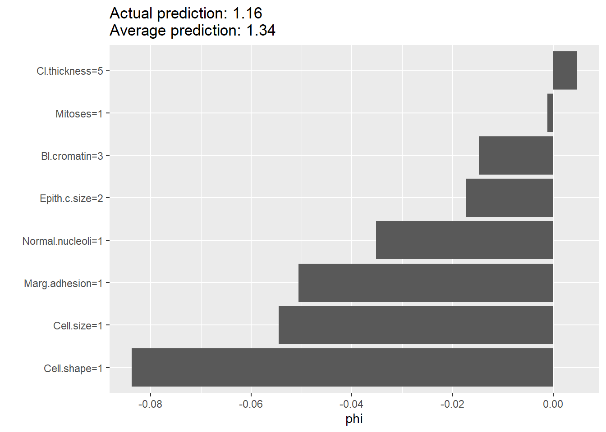
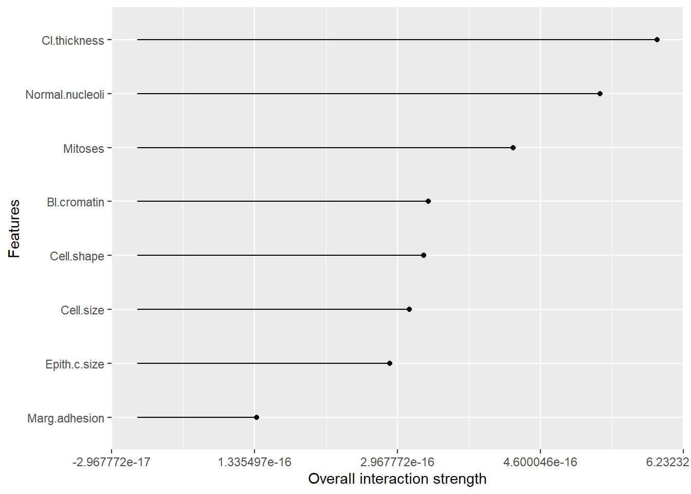

Chapter 4 Statistics
This section is not intended as a textbook on statistics. Rather it demonstrates regression approaches that can be used including sample size estimation, R codes provided.
4.1 Univariable analyses
4.1.1 Parametric tests
T-test is the workhorse for comparing if 2 datasets are have the same distribution. Performing t-test in R requires data from 2 columns: one containing the variables for comparison and one to label the group. There are different forms of t-test depending on whether the two samples are paired or unpaired. In general, the analysis takes the form of \(t=\frac{\mu_1 - \mu_2}{variance}\). It is recommended to check the distribution of the data by using histogram. For this exercise, we will use the simulated data from ECR trials. The grouping variable is the trial assignment.
#comparison of early neurological recovery (ENI) by tral (T)
dtTrial<-read.csv("./Data-Use/dtTrial_simulated.csv")
t.test(dtTrial$ENI~dtTrial$T)##
## Welch Two Sample t-test
##
## data: dtTrial$ENI by dtTrial$T
## t = 0.17454, df = 487.36, p-value = 0.8615
## alternative hypothesis: true difference in means between group 0 and group 1 is not equal to 0
## 95 percent confidence interval:
## -0.04569535 0.05460540
## sample estimates:
## mean in group 0 mean in group 1
## 0.3084644 0.30400944.1.2 Non-parametric tests
Chi-squared and Fisher-exact tests can be done by using the table function for setting up the count data into 2 x 2 contingency table or confusion matrix. The formula for the Chi-squared test takes on a familiar form \(\chi^2=\frac{(observed-expected)^2}{expected}\). In this example we will use the data above.
##
## 0 1
## 0 112 101
## 1 144 143##
## Pearson's Chi-squared test with Yates' continuity correction
##
## data: dtTrial$HT and dtTrial$T
## X-squared = 0.19553, df = 1, p-value = 0.6584The Wilcoxon rank sum test is performed with continuous data organised in the same way as the t-test. There are several different approaches to performing Wilcoxon rank sum test. The coin package allows handling of ties.
##
## Attaching package: 'coin'## The following object is masked from 'package:scales':
##
## pvalue##
## Wilcoxon rank sum test with continuity correction
##
## data: ENI by T
## W = 31159, p-value = 0.9642
## alternative hypothesis: true location shift is not equal to 04.2 Regression
There are many different form of regression methods. A key principle is that the predictors are independent of each others. This issue will be expand on in the later in the section on collinearity. Special methods are required when the predictors are collinear.
4.2.1 Brief review of matrix
A vector is has length one. A matrix is an ordered array in 2 dimensions. A tensor is an ordered array in 3 dimensions.
A matrix in which the columns are linearly related are said to be rank deficient. The rank of a given matrix is an expression of the number of linearly independent columns of that matrix. Given that row rank and column rank are equivalent, rank deficiency of a matrix is expressed as the difference between the lesser of the number of rows and columns, and the rank of the matrix. A matrix with rank of 1 is likely to be linearly related.
4.2.2 Linear (least square) regression
Least square regression uses the geometric properties of Euclidean geometry to identify the line of best. The sum of squares \(SSE\) is \(\sum(observed-expected)^2\). The \(R^2\) is a measure of the fit of the model. It is given by \(1-\frac{SS_(res)}{SS_(total)}\). Low \(R^2\) indicates a poorly fitted model and high \(R^2\) indicates excellent fitting. The assumption here is that the outcome variable is a continuous variable.
library(ggplot2)
load("./Data-Use/world_stroke.Rda")
ggplot(world_sfdf, aes(x=LifeExpectancy,y=MeanLifetimeRisk))+
geom_smooth(method="lm", aes(Group=Income, linetype=Income))+geom_point()+xlab("Life Expectancy")## `geom_smooth()` using formula = 'y ~ x'
4.2.3 Logistic regression
For outcome that are binary in nature such as yes or no, then least square regression is not appropriate. There are no close form solution for this analysis and a numerical approach using maximum likelihood approach is needed. When examining the results of logistic regression one is often enchanted by the large odds ratio. It is important to look at the metrics of model calibration (discussed below). A clue to a poorly calibrated model is the observation that the width of the confidence interval for odds ratio is wide.
#glm
data("BreastCancer",package = "mlbench")
#remove id column and column with NA to feed into iml later
BreastCancer2<-lapply(BreastCancer[,-c(1,7)], as.numeric)
BreastCancer2<-as.data.frame(BreastCancer2)
DCa<-glm(Class~., data=BreastCancer2)
summary(DCa)##
## Call:
## glm(formula = Class ~ ., data = BreastCancer2)
##
## Coefficients:
## Estimate Std. Error t value Pr(>|t|)
## (Intercept) 0.723054 0.018613 38.847 < 2e-16 ***
## Cl.thickness 0.042754 0.003992 10.709 < 2e-16 ***
## Cell.size 0.019263 0.007293 2.641 0.00845 **
## Cell.shape 0.032217 0.007016 4.592 5.22e-06 ***
## Marg.adhesion 0.021463 0.004386 4.893 1.24e-06 ***
## Epith.c.size 0.011637 0.005965 1.951 0.05148 .
## Bl.cromatin 0.035266 0.005650 6.241 7.57e-10 ***
## Normal.nucleoli 0.016928 0.004247 3.986 7.44e-05 ***
## Mitoses 0.001086 0.006048 0.180 0.85757
## ---
## Signif. codes: 0 '***' 0.001 '**' 0.01 '*' 0.05 '.' 0.1 ' ' 1
##
## (Dispersion parameter for gaussian family taken to be 0.0481263)
##
## Null deviance: 157.908 on 698 degrees of freedom
## Residual deviance: 33.207 on 690 degrees of freedom
## AIC: -126.1
##
## Number of Fisher Scoring iterations: 24.2.4 Discrimination and Calibration
A high _\(R^2\) suggests that the linear regression model is well calibrated. This metric is often not displayed but should be sought when interpreting the data.
The areas under the receiver operating characteristic curve (AUC) is used to assess how well the models discriminate between those who have the disease and those who do not have the disease of interest. An AUC of 0.5 is classified as no better than by chance; 0.8 to 0.89 provides good (excellent) discrimination, and 0.9 to 1.0 provides outstanding discrimination. This rule of thumb about interpreting AUC when reading the literature is language the authors used to describe the AUC. This test of discrimination is not synonymous with calibration. It is possible to have a model with high discrimination but poor calibration (Diamond 1992). The AUC is similar to Harrells c-index but the interpretation of difference in AUC and c-index between models is not straightforward. A difference in 0.1 of AUC correspond to the number of subject rank correctly. The c-index was originally described for survival analysis (Harrell FE Jr 1982). Harrell described the c-index (concordance index) as estimating the probability that, of two randomly chosen patients, the patient with the higher prognostic score will outlive the patient with the lower prognostic score. As such the c-index should be interpreted as the number of concordant pairs relative to the total number of comparable pairs. It has been proposed that the AUC and c-index is not appropriate for survival analysis as they do not account for the dynamic nature of the data(Longato, Vettoretti, and Di Camillo 2020). The integrated Graf score has been proposed to account for difference in the estimated event-free survival probabilities with the actual outcome (Graf E 1999).
Calibration of logistic regression model is performed using the HosmerLemeshow goodness-of-t test and the Nagelkerke generalized R2. A model is well calibrated when the HosmerLemeshow goodness-of-t test shows no difference between observed and expected outcome or P value approaching 1. A high generalized \(R^2\) value suggests a well-calibrated regression model. Running regression through the rms or PredictABEL library provide these results. The generalized \(R^2\) can be obtained manually from base R by running an intercept only model and again with covariates. It is given by \(1-\frac{L1}{L0}\).
## Loading required package: Hmisc##
## Attaching package: 'Hmisc'## The following object is masked from 'package:RNiftyReg':
##
## translate## The following object is masked from 'package:CHNOSZ':
##
## mtitle## The following object is masked from 'package:plotly':
##
## subplot## The following objects are masked from 'package:plyr':
##
## is.discrete, summarize## The following objects are masked from 'package:dplyr':
##
## src, summarize## The following object is masked from 'package:Biobase':
##
## contents## The following objects are masked from 'package:base':
##
## format.pval, units##
## Attaching package: 'rms'## The following object is masked from 'package:lomb':
##
## lsp## Logistic Regression Model
##
## lrm(formula = Class ~ ., data = BreastCancer2)
##
## Model Likelihood Discrimination Rank Discrim.
## Ratio Test Indexes Indexes
## Obs 699 LR chi2 759.86 R2 0.915 C 0.993
## 1 458 d.f. 8 R2(8,699)0.659 Dxy 0.986
## 2 241 Pr(> chi2) <0.0001 R2(8,473.7)0.795 gamma 0.986
## max |deriv| 8e-10 Brier 0.028 tau-a 0.446
##
## Coef S.E. Wald Z Pr(>|Z|)
## Intercept -9.9477 1.0317 -9.64 <0.0001
## Cl.thickness 0.5776 0.1190 4.85 <0.0001
## Cell.size -0.0115 0.1759 -0.07 0.9479
## Cell.shape 0.5679 0.1913 2.97 0.0030
## Marg.adhesion 0.3137 0.1004 3.13 0.0018
## Epith.c.size 0.1306 0.1406 0.93 0.3529
## Bl.cromatin 0.5800 0.1456 3.98 <0.0001
## Normal.nucleoli 0.1232 0.0987 1.25 0.2120
## Mitoses 0.6092 0.3226 1.89 0.05904.2.4.1 Measuring Improvement in Regression Models
The net reclassification improvement (NRI) and integrated discrimination improvement (IDI) have been proposed as more sensitive metrics of improvement in model discrimination.The NRI can be considered as a percentage reclassication for the risk categories and the IDI is the mean difference in predicted probabilities between 2 models (constructed from cases with disease and without disease). The NRI and IDI scores are expressed as fractions and can be converted to percentage by multiplying 100.The continuous NRI and IDI can be performed using PredictABEL [Phan et al. (2017)](Phan et al. 2016).
4.2.4.2 Shapley value
We can use ideas from game theory relating to fair distribution of prot in coalition games; the coalition (co-operative) game in this case can be interpreted as contribution of the covariates to the model. The Shapley value regression method calculates the marginal contribution of each covariate as the average of all permutations of the coalition of the covariates containing the covariate of interest minus the coalition without the covariate of interest. The advantage of this approach is that it can handle multicollinearity (relatedness) among the covariates.
The feature importance is used to assess the impact of the features on the models decision
#this section takes the output from logistic regression above.
library(iml)
X = BreastCancer2[which(names(BreastCancer2) != "Class")]
predictor = Predictor$new(DCa, data = X, y = BreastCancer2$Class)
imp = FeatureImp$new(predictor, loss = "mae")
plot(imp)
From the logistic regression above cell thickness and cromatin have the highest coefficient and lowest p value. This is the same as feature importance. By contrast the Shapley values show that cell shape and marg adhesion make the largest impact on the model when considering the contribution to the model after considering all the contribution by different coalitions.

4.2.4.3 ICE
The individual conditional expectation (ICE) curves is the plot of the expectation fof the predictive value for each observation at the unique value for the feature.
#feature is the covariate of interest
par(mfrow=c(1,2))
eff_thick <- FeatureEffect$new(predictor,
feature = "Cl.thickness",
method = "ice",
center.at = 0)
plot(eff_thick)
4.2.5 Interaction
Interactions is plotted here using lollipop bar. The ggalt library can be used to create this type of plot with geom_lollipop. The strength of interaction is measured using Friedmans H-statistics. The H-statistics ranges from 0 to 1 with 1 indicating the overall interaction strength. In the case with Breast Cancer data, the interaction strength is low.
When describing interaction terms it is recommended that the results be expressed as coefficients rather than as odds ratio.

4.3 Confounder
A confounder is a covariate that serves as a cause of both exposure and outcome and as such confound the analysis. A mediator exist on the causal pathway from exposure to outcome. A common misconception is that the multiple regression adjust for imbalance in covariates in clinical trial. This issue was observed in the pivotal NINDS alteplase trial. The results of the trial has since been accepted with re-analysis of this trial using covariate adjustment (Ingall et al. 2004).
There are several methods for covariate adjustment in radomised trials: direct adjustment, standardisation and inverse-probability-of-treatment weighting.
4.3.1 Confounder weighted model
The issue asked is whether one should choose to perform confounder analysis or propensity matching.
4.3.2 Propensity matching
Propensity matching is an important technique to adjust for imbalance in covariates between 2 arms. There are concerns with mis-use of this technique such as difference in placebo arms from multiple sclerosis trials (Signori et al. 2020). It is proposed that this technique should be used only if all the confounders are measurable. This situation may not be satisfied if the data were accrued at different period, in different continent etc.
4.3.3 E-values
The E-values (VanderWeele TJ 2017) has been proposed a measure of unmeasured confounders in observational studies. The E-value is a measure of the extent to which the confounder have on the treatmentoutcome association, conditional on the measured covariates. A large E-value is desirable. The E-values is available in Evalue library (Mathur MB 2018).
4.4 Causal inference
Causation and association are often miscontrued to be the same. However, the finding of correlation (association) does necessarily imply causation. Causal inference evaluates the response of an effect variable in the setting of change in the cause of the effect variable. There are issues with approach to analysis of causal inference. It can be performed using frequentist such as confounder weighted model or Bayesian methods such as (Baysian additive regression tree).
4.5 Special types of regression
4.5.1 Ordinal regression
Ordinal regression is appropriate when the outcome variable is in the form of ordered categorical values. For example, the Rankin scale of disability is bounded between the values of 0 and 6. This type of analysis uses the proportional odds model and the requirement for this model is stringent. When examining results of ordinal regression check that the authors provide this metric, the Brant test. The Brant test assesses the parallel regression assumption. Ordinal regression is performed using polr function in MASS library. The Brant test is available in the Brant library.
4.5.2 Survival analysis
Survival analysis is useful when dealing with time to event data. Time to event data can be left, interval and right censoring. Left censoring exists when events may have already occurred at the start of the study eg purchase of phones. Right censoring exists when events have not happened yet eg cancer trial. Interval censoring exists when an insurance has been purchased but the date of product purchase is not yet known.
The Cox model assesses the hazard of outcome between two groups. The assumption of this model is that the hazard between each arm is proportional (Stensrud and Hernan 2020). The proportional hazard model can be tested based on the weighted Schoenfeld residuals(Grambsch and Therneau 1994). There are non-parametric models available when the assumption of the proportional hazard model does not hold.
In the next chapter on machine learning, an illustration of random survival forest with rfrsc library and ranger library are provided. In the section on [clinical trial][Interpreting clinical trials] we illustrate how the results can be converted to numbers needed to treat. The median survival corresponding to survival probability of 0.50 can be determined here. Metrics for assessing survival model was described above.
library(survival)
library(survminer)
#data from survival package on NCCTG lung cancer trial
#https://stat.ethz.ch/R-manual/R-devel/library/survival/html/lung.html
data(cancer, package="survival")
#time in is available in days
#status censored=1, dead=2
#sex:Male=1 Female=2
survfit(Surv(time, status) ~ 1, data = cancer)## Call: survfit(formula = Surv(time, status) ~ 1, data = cancer)
##
## n events median 0.95LCL 0.95UCL
## [1,] 228 165 310 285 363## Call:
## coxph(formula = Surv(time, status) ~ age + sex + ph.ecog + ph.karno +
## wt.loss, data = cancer)
##
## n= 213, number of events= 151
## (15 observations deleted due to missingness)
##
## coef exp(coef) se(coef) z Pr(>|z|)
## age 0.015157 1.015273 0.009763 1.553 0.120538
## sex -0.631422 0.531835 0.177134 -3.565 0.000364 ***
## ph.ecog 0.740204 2.096364 0.191332 3.869 0.000109 ***
## ph.karno 0.015251 1.015368 0.009797 1.557 0.119553
## wt.loss -0.009298 0.990745 0.006699 -1.388 0.165168
## ---
## Signif. codes: 0 '***' 0.001 '**' 0.01 '*' 0.05 '.' 0.1 ' ' 1
##
## exp(coef) exp(-coef) lower .95 upper .95
## age 1.0153 0.9850 0.9960 1.0349
## sex 0.5318 1.8803 0.3758 0.7526
## ph.ecog 2.0964 0.4770 1.4408 3.0502
## ph.karno 1.0154 0.9849 0.9961 1.0351
## wt.loss 0.9907 1.0093 0.9778 1.0038
##
## Concordance= 0.64 (se = 0.026 )
## Likelihood ratio test= 33.53 on 5 df, p=3e-06
## Wald test = 32.27 on 5 df, p=5e-06
## Score (logrank) test = 32.83 on 5 df, p=4e-06Test proportional hazard assumption using weighted residuals (Grambsch and Therneau 1994). The finding below shows that inclusion of covariate ph.karno violate proportional hazard assumption.
## chisq df p
## age 0.186 1 0.666
## sex 2.059 1 0.151
## ph.ecog 1.359 1 0.244
## ph.karno 4.916 1 0.027
## wt.loss 0.110 1 0.740
## GLOBAL 7.174 5 0.208Plot fit of survival model
## Warning: `gather_()` was deprecated in tidyr 1.2.0.
## Please use `gather()` instead.
## The deprecated feature was likely used in the survminer package.
## Please report the issue at <https://github.com/kassambara/survminer/issues>.
## This warning is displayed once every 8 hours.
## Call `lifecycle::last_lifecycle_warnings()` to see where this warning was generated.## `geom_smooth()` using formula = 'y ~ x'
Forest plot of outcome from survival analysis

An alternative way to display the output from Cox regression is to use forestmodel library .

The pseudoR2 for Cox regression model proposed by Royston can be evaluated
## D se(D) R.D R.KO R.N C.GH
## 0.8546894 0.1495706 0.1484960 0.1515108 0.1459168 0.64188944.5.3 Quantile regression
Least spare regression is appropriate when the data is homoscedascity or the error term remain constant. This can be seen as the data varies around the fitted line. Homoscedascity implies that the data is homogenous. Quantile regression is appropriate when the distribution of the data is non-normal and it is more appropriate to look at the conditional median of the dependent variable. There are several libraries for this task quantreg and Bayesian libraries. In the example below, the life time risk of stroke is regressed against life expectancy using lest square and quantile regression.
library(quantreg)
library(ggplot2)
load("./Data-Use/world_stroke.Rda")
#quantile regression
rqfit <- rq( MeanLifetimeRisk~ LifeExpectancy, data = world_sfdf)
rqfit_sum<-summary(rqfit)
#least square regression
lsfit<-lm(MeanLifetimeRisk~LifeExpectancy,data=world_sfdf)
lsfit_sum<-summary(lsfit)
#plot
ggplot(world_sfdf, aes(x=LifeExpectancy,y=MeanLifetimeRisk))+
#add fitted line for least square
geom_abline(intercept =lsfit_sum$coefficients[1], slope=lsfit_sum$coefficients[2],color="red")+
#add fitted line for quantile regression
geom_point()+xlab("Life Expectancy")+
geom_abline(intercept =rqfit_sum$coefficients[1], slope=rqfit_sum$coefficients[2],color="blue")#annotate least square and quantile at position x, y
#annotate("text",x=60, y=27, label=paste0("least square =", round(lsfit_sum$coefficients[1],2) ,"+", round(lsfit_sum$coefficients[2],2),"x ","Life Expectancy"),color="red")+ annotate("text",x=75, y=12,label=paste0("quantile =",round(rqfit_sum$coefficients[1],2), " + ", round(rqfit_sum$coefficients[2],2)," x ","Life Expectancy"),color="blue")4.5.4 Non-negative regression
In certain situations, it is necessary to constrain the analysis so that the regression coefifcients are non-negative. For example, when regressing brain regions against infarct volume, there is no reason believe that a negative coefficient attributable to a brain region is possible(Phan, Donnan, Koga, et al. 2006) . Non-negative regression can be performed in R using nnls.
4.5.5 Poisson regression
Poisson regression is used when dealing with number of event over time or distance such as number of new admissions or new cases of hepatitis or TIA over time. An assumption of the Poisson distribution is that the mean & lambda; and variance are the same.
A special case of Poisson regression is the negative binomial regression. This latter method is used when the variance is greater than the mean pf the data or over-dispersed data. Negative binomial regression can be applied to number of failure event over time. Here failure has a lose definition and can be stroke recurrence after TIA or cirrhosis after hepatitis C infection.
Zero-inflated data occurs when there is an abundance of zeroes in the data (true and excess zeroes).
4.5.6 Conditional logistic regression
Conditional logistical regression model should be used when the aim is to compare pair of objects from the same patient. Examples include left and right arms or left and right carotid arteries. This method is available from clogit in survival.
4.5.7 Multinomial modelling
Multinomial modelling is used when the outcome categorical variables are not ordered. This situation can occur when analysis involves choice outcome (choices of fruit: apple, orange or pear). In this case, the log odds of each of the categorical outcomes are analysed as a linear combination of the predictor variables. The nnet library have functions for performing this analysis.
4.6 Sample size estimation
Clinicians are often frustrated about sample size and power estimation for a study, grant or clinical trial. This aspect is scrutinised by ethics committee and in peer review process for journals. Luckily, R provides several packages for sample size amd power estimation: pwr library. Cohen has written reference textbook on this subject (Cohen 1977).
4.6.1 Proportion
library(pwr)
#ttest-d is effect size
#d = )mean group1 -mean group2)/variance
pwr.t.test(n=300,d=0.2,sig.level=.05,alternative="greater") ##
## Two-sample t test power calculation
##
## n = 300
## d = 0.2
## sig.level = 0.05
## power = 0.7886842
## alternative = greater
##
## NOTE: n is number in *each* groupWe provided an example below for generating power of clinical trial. Examples are taken from a paper on sample size estimation for phase II trials (Phan, Donnan, Davis, et al. 2006).
library(pwr)
#h is effect size. effect size of 0.5 is very large
#sample size
pwr.2p.test(h=0.5,n=50,sig.level=0.05,alternative="two.sided")##
## Difference of proportion power calculation for binomial distribution (arcsine transformation)
##
## h = 0.5
## n = 50
## sig.level = 0.05
## power = 0.705418
## alternative = two.sided
##
## NOTE: same sample sizes##
## Difference of proportion power calculation for binomial distribution (arcsine transformation)
##
## h = 0.1
## n = 50
## sig.level = 0.05
## power = 0.07909753
## alternative = two.sided
##
## NOTE: same sample sizesThe output of the sample size calculation can be put into a table or plot.
library(pwr)
#pwr.2p.test(h=0.3,n=80,sig.level=0.05,alternative="two.sided")
h <- seq(.1,.5,.1) #from 0.1 to 0.3 by 0.05
nh <- length(h) #5
p <- seq(.3,.9,.1)# power from 0.5 to 0.9 by 0.1
np <- length(p) #9
# create an empty array 9 x 5
samplesize <- array(numeric(nh*np), dim=c(nh,np))
for (i in 1:np){
for (j in 1:nh){
result <- pwr.2p.test(n = NULL, h = h[j],
#result <- pwr.r.test(n = NULL, h = h[j],
sig.level = .05, power = p[i],
alternative = "two.sided")
samplesize[j,i] <- ceiling(result$n)
}
}
samplesize## [,1] [,2] [,3] [,4] [,5] [,6] [,7]
## [1,] 412 583 769 980 1235 1570 2102
## [2,] 103 146 193 245 309 393 526
## [3,] 46 65 86 109 138 175 234
## [4,] 26 37 49 62 78 99 132
## [5,] 17 24 31 40 50 63 85#graph
xrange <- range(h)
yrange <- round(range(samplesize))
colors <- rainbow(length(p))
plot(xrange, yrange, type="n",
xlab="Effect size (h)",
ylab="Sample Size (n)" )
# add power curves
for (i in 1:np){
lines(h, samplesize[,i], type="l", lwd=2, col=colors[i])
}
# add annotation (grid lines, title, legend)
abline(v=0, h=seq(0,yrange[2],50), lty=2, col="grey89")
abline(h=0, v=seq(xrange[1],xrange[2],.02), lty=2,
col="grey89")
title("Sample Size Estimation\n Difference in Proportion")
legend("topright", title="Power", as.character(p),
fill=colors)
4.6.1.1 Non-inferiority
Non-inferiority trials may offer information in a way that a traditional superiority design do not. The design may be interested in other aspect of the treatment such as cost and lower toxicity (Kaji and Lewis 2015). Examples of non-inferiority trial designs include antibiotics versus surgery for appendicitis (Salminen et al. 2015). There are concerns with reporting of noninferiority trial. Justification for the margin provided in 27.6% (Gopal et al. 2015). The following describes a trial design where its expected that drug will result in a certain outcome p1 and the control arm p2 and the ratio of subject in treatment to control arm is k. The difference in outcome is delta. The margin is defined as non-inferior if <0.
library(TrialSize)
TwoSampleProportion.NIS(alpha=.05,
beta=.8,
p1=.6,
p2=.7,
k=1,
delta = .1,
margin=-.2
)## [1] 3.2259114.6.2 Logistic regression
library(powerMediation)
library(ggplot2)
#continuous predictor
#p1=event rate
#exp(0.405) =1.5
powerLogisticCon(n=200, p1=0.265, OR=exp(0.014), alpha=0.05)## [1] 0.03056289# creating a data frame using data from
a=seq(0,05.4,0.05)
df_power<-data.frame(`ASPECTS`= a,
"Power"=powerLogisticCon(n=100, p1=a, OR=exp(.695), alpha=0.05)
)## Warning in sqrt(n * beta.star^2 * p1 * (1 - p1)): NaNs produced## Warning: Removed 88 rows containing missing values (`geom_point()`).
An alternative library to perform sample size for logistic regression is WebPower library.
## Loading required package: lme4##
## Attaching package: 'lme4'## The following object is masked from 'package:raster':
##
## getData## The following object is masked from 'package:nlme':
##
## lmList## The following object is masked from 'package:modeltools':
##
## refit## The following object is masked from 'package:generics':
##
## refit## The following object is masked from 'package:MatrixModels':
##
## mkRespMod## Loading required package: lavaan## This is lavaan 0.6-15
## lavaan is FREE software! Please report any bugs.##
## Attaching package: 'lavaan'## The following object is masked from 'package:TTR':
##
## growth## The following object is masked from 'package:tm':
##
## inspect## Loading required package: PearsonDSwp.logistic(p0=0.007, #Prob (Y=1|X=0)
p1=0.012, #Prob (Y=1|X=1)
alpha=0.05,
power=0.80,
alternative="two.sided",
family="normal")## Power for logistic regression
##
## p0 p1 beta0 beta1 n alpha power
## 0.007 0.012 -4.954821 0.5440445 3336.2 0.05 0.8
##
## URL: http://psychstat.org/logistic4.6.3 Survival studies
Sample size for survival studies can be performed using powerSurvEpi or gsDesign.
library(powerSurvEpi)
#sample size
ssizeEpi.default(power = 0.80,
theta = 2,
p = 0.408 ,
psi = 0.15,
rho2 = 0.344^2,
alpha = 0.05)## [1] 512## [1] 1#Amarenco NEJM 2020 #equal sample size k=1
ssizeCT.default(power = 0.8, k = .8, pE = 0.085,
pC = 0.109,
RR = 0.78, alpha = 0.05)## nE nC
## 2417 30214.7 Randomised clinical trials
A common misconception is that the multiple regression adjust for imbalance in covariates in clinical trial. This issue was observed in the pivotal NINDS alteplase trial. The results of the trial has since been accepted with re-analysis of this trial using covariate adjustment(Ingall et al. 2004). There are several methods for covariate adjustment in radomised trials: direct adjustment, standardisation and inverse-probability-of-treatment weighting.
4.7.1 Covariate adjustment in trials
Specifically, covariate adjustment refers to adjustment of covariates available at the time of randomisation, i.e.prespecified variables and not variables after randomisation such as pneumonia post stroke trials. The advantage of covariate adjustment is that it results in narrower confidence interval as well as increase the power of the trial up to 7% (Kahan 2014). The increased power is highest when prognostic variables are used but can decrease power when non-prognostic variables are used (Kahan 2014).
4.7.2 Subgroup analysis
Subgroup analysis can be misleading especially if not specified prior to trial analysis (Wang et al. 2007). Furthermore, increasing the number of subgroup analysis will lead to increasing the chance of false positive result or multiplicity. It is important to differentiate between prespecified and posthoc analyses as posthoc analyses may be biased by examination of the data.
4.7.3 p value for interaction
The p value for interaction describe the influence by a baseline variable treatment effect on outcome in clinical trial (Wang et al. 2007). In a hypothetical trial, a significant p value for interaction between males and females for treatment effect on primary outcome indicates heterogenity of treatment effect.
## Warning: package 'Publish' was built under R version 4.3.2## Registered S3 method overwritten by 'Publish':
## method from
## print.ci coin4.7.4 Interpreting risk reduction in clinical trials
A key issue in interpreting of clinical trials occurs when the relative risk reduction or relative hazard risk are provided. This issue affect the clinical interpretation of the trial finding and its application in practice. An example is the result of the ACAS asymptomatic carotid artery trial is often quoted as showing 50% risk reduction. In fact, there was 2% annual risk of ipsilateral stroke in the medical and 1% risk in the surgical arm. The absolute risk reduction or ARR was 1% per year. However, the 50% relative risk reduction is often quoted to explain to patients.
4.7.5 NNT from ARR
In this case, the number needed to treat (NNT) is given by \(\frac{1}{ARR}\) or \(\frac{1}{0.01}=100\) to achieve the trial outcome or 100 patients are needed to be treated to reduce the stroke risk to 1%. The recommendation is that the 95% confidence interval for NNT should be provided.
4.7.6 NNT from odds ratio
Calculation of NNT for odds ratio requires knowledge of the outcome of the placebo group. The NNT is given by \(\frac{1}{ACR-\frac{OR*ACR}{1-(ACR+OR*ACR)}}\). The ACR represents the assumed control risk. The NNT can be calculated from nnt function in meta library.
## Warning: package 'meta' was built under R version 4.3.2## Loading 'meta' package (version 7.0-0).
## Type 'help(meta)' for a brief overview.
## Readers of 'Meta-Analysis with R (Use R!)' should install
## older version of 'meta' package: https://tinyurl.com/dt4y5drs##
## Attaching package: 'meta'## The following object is masked from 'package:survMisc':
##
## ci## The following object is masked from 'package:mixmeta':
##
## blup## The following object is masked from 'package:pROC':
##
## ci## The following object is masked from 'package:sp':
##
## bubble## The following object is masked from 'package:mada':
##
## forest## The following object is masked from 'package:mvmeta':
##
## blup## OR p.c NNT
## 1 0.73 0.3 16.208114.7.7 NNT from risk ratio
#data from EXTEND-IV trial in NEJM 2019
#outcome 35.4% in tpa and 29.5% in control
nnt(1.44, p.c = 0.295, sm = "RR")## RR p.c NNT
## 1 1.44 0.295 -7.704164.7.8 NNT from hazard ratio
Calculation of NNT for hazard ratio requires knowledge of the outcome of the placebo group and the hazard ratio or HR. The formula using the binomial theorem is \(p=1-q\) where q is given by the ratio of outcome and numbers recruited in the placebo group. The formula is taken from (Ludwig, Darmon, and Guerci 2020) . The NNT is given \(\frac{1}{[p^{HR}-p}\) . We illustrated this using data from metaanalysis on aspirin use in stroke in Lancet 2016. There were 45 events among 16053 patients in the control group. The HR was 0.44. The NNT from this formula \(\frac{1}{.9971968^.44-.9971968}\) was 637.
4.7.9 NNT from metaananlysis
There are concerns with using NNT from the results of metaanalysis as the findings are amalgations of trials with different settings (Marx 2003) (Smeeth 1999). The caution applies when baseline risks or absolute risk differences vary across trials.
4.8 Diagnostic test
4.8.1 Sensitivity, specificity
The sensitivity of a diagnostic test is the true positive rate and the specificity is the true negative rate. Example of 2 x 2 table is provided here. As an exercise, consider a paper about a diagnostic test for peripheral vertigo reporting 100% sensitivity and 94.4% specificity. There are 114 patients, 72 patients without stroke have vertigo and positive test findings. Among patients with stroke 7 of 42 have positive test findings. The sensitivity is \(TP=\frac{TP}{TP+FN}\) and the specificity is the \(TN=\frac{TN}{TN+FP}\).
# Peripheral Vertigo
# Disease Positive Disease Negative
#$$$$$$$$$$$$$$$$$$$$$$$$$$$$$$$$$$$$$$$$$$$$$$$$$$$
# HIT Test# # $
# Positive# True Positive # False Positive $
# # 72 # 7 $
#$$$$$$$$$$$$$$$$$$$$$$$$$$$$$$$$$$$$$$$$$$$$$$$$$$$
# HIT Test# # $
# Negative# False Negative # True Negative $
# # 0 # 35 $
#$$$$$$$$$$$$$$$$$$$$$$$$$$$$$$$$$$$$$$$$$$$$$$$$$$$
# Peripheral Vertigo
#Sensitiviy=TP/(TP+FN)=100%
#Specificity=TN/(TN+FP)=83%4.8.2 AUC
The area under the receiver operating characteristics (ROC) curve or AUC is a measure of the accuracy of the test. It is recommended that ROC curve is used when there are multiple threshold. It should not be used when the test has only one threshold. Some investigators suggest caution regarding the validity of using receiver operating curve with single threshold diagnostic tests (J 2020). An AUC of 0.5 is classified as no better than by chance; 0.60.69 provides poor discrimination; 0.70.79 provides acceptable (fair) discrimination, 0.8 to 0.89 provides good (excellent) discrimination, and 0.9 to 1.0 provides outstanding discrimination.
4.8.3 Likelihood ratio
Positive likelihood ratio (PLR) is the ratio of sensitivity to false positive rate (FPR); the negative (NLR) likelihood ratio is the ratio of 1-sensitivity to specificity. A PLR indicates the likelihood that a positive spot sign (test) would be expected in a patient with ICH (target disorder) compared with the likelihood that the same result would be expected in a patient without ICH. Using the recommendation by Jaeschke et al, a high PLR (>5) and low NLR (<0.2) indicate that the test results would make moderate changes in the likelihood of hematoma growth from baseline risk. PLRs of >10 and NLRs of <0.1 would confer very large changes from baseline risk .
4.8.3.1 Fagans normogram
Fagans normogram can be conceptualised as a sliding ruler to match the disease prevalence and likelihood ratios to evaluate the impact on the post-test probability (TJ 1975). At the current disease prevalence of 23.4% and PLR 4.65, the post-test probability remains low at 0.60.
library(tidyverse)
source("https://raw.githubusercontent.com/achekroud/nomogrammer/master/nomogrammer.r")
p<-nomogrammer(Prevalence = .234, Plr = 4.85, Nlr = 0.49)
p+ggtitle("Fagan's normogram for Spot Sign and ICH growth")
#to save the file
#ggsave(p,file="Fagan_SpotSign.png",width=5.99,height=3.99,units="in")4.8.3.2 Likelihood ratio graph
Likelihood ratio graph is a tool for comparing diagnostic tests (BJ 2000).
#plot likelihood ratio graph
LR_graph<-function (Read,sheet,Sensitivity, Specificity){
Read1<-readxl::read_xlsx(Read, sheet = sheet)
#binary data
#A=True pos %B=False positive %C=False negative %D=True negative
A=Read1$TP
B=Read1$FP
C=Read1$FN
D=Read1$TN
TPR=A/(A+C)
FPR=1-(D/(D+B))
TPR_DiagnosticTest=Sensitivity
FPR_DiagnosticTest=1-Specificity
# set plot
X=seq(0,1,by=.1)
Y=seq(0,1,by=.1)
plot(X,Y,main="Likelihood Ratio graph", xlab="1-Specificity",ylab="Sensitivity",cex=.25)
#pch describe the shape. The value 1 corresponds o
points(FPR_DiagnosticTest,TPR_DiagnosticTest,pch=8,col="blue",cex=2)
#pch describe the shape. The value 8 corresponds *
points(FPR,TPR,pch=1,col="red",cex=2) #add point
#abline(coef = c(0,1)) #add diagonal line
df1<-data.frame(c1=c(0,TPR_DiagnosticTest),c2=c(0,FPR_DiagnosticTest))
reg1<-lm(c1~c2,data=df1)
df2<-data.frame(c1=c(TPR_DiagnosticTest,1),c2=c(FPR_DiagnosticTest,1))
reg2<-lm(c1~c2,data=df2)
abline(reg1)
abline(reg2)
text(x=FPR_DiagnosticTest,y=TPR_DiagnosticTest+.3,label="Superior",cex=.7)
text(x=FPR_DiagnosticTest+.2,y=TPR_DiagnosticTest+.2,label="Absence",cex=.7)
text(x=.0125,y=TPR_DiagnosticTest-.1,label="Presence",cex=.7)
text(x=FPR_DiagnosticTest+.1,y=TPR_DiagnosticTest,label="Inferior",cex=.7)
text(x=.7,y=.2,label="Reference = Content Expert",cex=.7)
text(x=.7,y=.15, label="Diagnostic Test software", cex=.7)
}Runnning the function from above
#Sensitivity=0.623
#Specificity=1-.927
LR_graph("./Data-Use/Diagnostic_test_summary.xlsx",1,.623,.927)## New names:
## `` -> `...11`
4.9 Metaanalysis
During journal club, junior doctors are often taught about the importance of metaanalysis. It is worth knowing how to perform a metaanalysis in order to critique the study. This is an important issue as the junior doctor is supervised by someone who a content expert but not necessarily a method expert. Metaanalysis can be performed for clinical trials, cohort studies or diagnostic studies. As an example, it is not well known outside of statistics journal that the bivariate analysis is the preferred method to evaluate diagnostic studies (Reitsma et al. 2005). By contrast, the majority of metaanalysis of diagnostic studies uses the univariate method of Moses and Littenberg (Moses, Shapiro, and Littenberg 1993). This issue will be expanded below.
4.9.1 Quality of study
All studies require evaluation of the quality of the individual studies. This can be done with the QUADAS2 tool, available at https://annals.org/aim/fullarticle/474994/quadas-2-revised-tool-quality-assessment-diagnostic-accuracy-studies.
4.9.2 PRISMA
The PRISMA statement is useful for understanding the search strategy and the papers removed and retained in the metaanalysis. An example of generating the statement is provided below in R. The example given here is from a paper on the use of spot sign to predict enlargment of intracerebral hemorrhage (Phan, Krishnadas, et al. 2019).
library(PRISMAstatement)
#example from Spot sign paper. Stroke 2019
prisma(found = 193,
found_other = 27,
no_dupes = 141,
screened = 141,
screen_exclusions = 3,
full_text = 138,
full_text_exclusions = 112,
qualitative = 26,
quantitative = 26,
width = 800, height = 800)#https://rich-iannone.github.io/DiagrammeR/graphviz_and_mermaid.html#attributes
library(DiagrammeR)
grViz("
digraph boxes_and_circles {
# a 'graph' statement
graph [overlap = true, fontsize = 10]
# several 'node' statements
node [shape = box,
fontname = Helvetica]
Stroke
node [shape = oval,
fixedsize = false,
color=red,
width = 0.9]
Hypertension; 'No Hypertension'
node [shape= circle,
fontcolor=red,
color=blue,
fixedsize=false]
Hypokalemia; 'No Hypokalemia'
# several 'edge' statements
edge [arrowhead=diamond]
Stroke->{Hypertension, 'No Hypertension'}
Hypertension->{Hypokalemia, 'No Hypokalemia'}
}
")## alternative
grViz("digraph flowchart {
# node definitions with substituted label text
node [fontname = Helvetica, shape = rectangle]
tab1 [label = '@@1']
tab2 [label = '@@2']
tab3 [label = '@@3']
tab4 [label = '@@4']
tab5 [label = '@@5']
# edge definitions with the node IDs
tab1 -> tab3
tab1-> tab2
#tab2->tab3
tab2 -> tab4
tab2-> tab5;
}
[1]: 'Stroke n=19'
[2]: 'Hypertension n=10'
[3]: 'No Hypertension n=9'
[4]: 'Hypokalemia n=?'
[5]: 'No Hypokalemia n=?'
")4.9.3 Conversion of median to mean
One issue with performing metaanalysis is that one paper may report mean and another report median age. The formula for the mean is given by \(\frac{a+2m+b}{4}\) where m is the median, a is the upper and b is the lower range (Wan 2014). The variance is given by \(S^2=\frac{1}{12}(\frac{(a+2m+b)^2}{4}+{(b-a)^2})\). This formula requires examination of the data such as the figure to obtain the upper and lower range. These changes are incorporated into meta libray using meatamean function (Balduzzi, Rcker, and Schwarzer 2019). More recently, investigators suggest to also consider the skewness of the data from the 5 number summary data (Shi et al. 2023). The argument method.mean in function metamean is used to specify the method for estimating the mean. In this case we chose the Luo method for illustration Luo (Luo et al. 2018). See the help page by typing question mark before metamean for more options.
library(meta)
#NIHSS data from ANGEL large core trial in NEJM 2023
metamean(q1=4,q3=20,median=16,n=230, method.mean = "Luo")## Number of observations: o = 230
##
## mean 95%-CI
## 13.1932 [11.6506; 14.7358]
##
## Details:
## - Untransformed (raw) meansHere the same data is used for the McGrath method (McGrath et al. 2020).
## Number of observations: o = 230
##
## mean 95%-CI
## 13.3333 [11.7907; 14.8759]
##
## Details:
## - Untransformed (raw) meansThe conversion from median to mean in metafor is performed using conv.fivenum function (Viechtbauer 2010). There is an update on the metafor page as well as discussion on alternate approach. The default method of this function is to use the methods by Luo (Luo et al. 2018), Wan (Wan 2014) and Shi (Shi et al. 2023)
library(metafor)
# example data frame
EstMean <- data.frame(Paper=c(1:4,NA), min=c(1,2,NA,2,NA), q1=c(NA,NA,4,4,NA),
median=c(5,6,6,6,NA), q3=c(NA,NA,10,10,NA),
max=c(12,14,NA,14,NA),
mean=c(NA,NA,NA,NA,7.0), sd=c(NA,NA,NA,NA,4.2),
n=c(30,30,30,30,30))
EstMean## Paper min q1 median q3 max mean sd n
## 1 1 1 NA 5 NA 12 NA NA 30
## 2 2 2 NA 6 NA 14 NA NA 30
## 3 3 NA 4 6 10 NA NA NA 30
## 4 4 2 4 6 10 14 NA NA 30
## 5 NA NA NA NA NA NA 7 4.2 30## Paper min q1 median q3 max mean sd n
## 1 1 1 NA 5 NA 12 5.356748 2.695707 30
## 2 2 2 NA 6 NA 14 6.475664 2.940771 30
## 3 3 NA 4 6 10 NA 6.713000 4.670521 30
## 4 4 2 4 6 10 14 6.882074 3.546379 30
## 5 NA NA NA NA NA NA 7.000000 4.200000 30The estmeansd library uses quantile estimation method with qe.mean.sd function when the data available are the median and quartile ranges (McGrath et al. 2020) (McGrath et al. 2022).The approach here is to use simulation to estimate the parameters.
## Warning: package 'estmeansd' was built under R version 4.3.2#data from ANGEL large core trial in NEJM 2023
res_qe <- bc.mean.sd(q1.val = 13, med.val = 16, q3.val = 20, n = 230)
res_qe ## $est.mean
## [1] 17.07168
##
## $est.sd
## [1] 5.672963The standard error from the mean can be estimated using get_SE function.
## $est.se
## [1] 0.5051669
##
## $boot_means
## [1] 17.32080 16.63567 16.93157 16.22506 16.81751 16.74528 17.43474 16.11106
## [9] 17.47347 16.43032 16.44389 16.11995 16.72996 16.21527 16.97045 17.36650
## [17] 16.93584 17.01512 17.64598 16.15726 16.55998 17.00313 15.80268 16.58914
## [25] 17.48917 17.24221 16.77229 16.07140 16.04065 17.08900 17.51776 16.99848
## [33] 16.80582 16.42138 16.48949 16.20926 17.01369 17.26644 16.39943 16.21991
## [41] 16.27875 17.25187 17.55987 15.58216 16.54443 15.61870 16.64487 17.00805
## [49] 16.42508 17.20625 15.77155 16.97637 16.83431 17.80827 16.82612 16.65967
## [57] 16.85211 15.74729 15.96911 16.37632 16.65517 16.96014 17.14616 16.41785
## [65] 16.40626 16.20178 16.27367 16.75516 16.54564 17.38497 16.62009 16.81253
## [73] 17.13541 16.73494 17.33151 16.45154 16.51921 16.50343 16.12960 16.60396
## [81] 16.18093 16.43201 17.14915 16.83220 16.64586 16.07443 15.78909 17.07393
## [89] 16.23504 16.97492 16.66537 16.91315 16.84260 16.30903 17.16021 16.41322
## [97] 16.89036 16.41005 16.69129 17.24132 17.02483 16.54984 17.27668 16.19821
## [105] 16.59967 17.40905 16.50958 15.87896 16.84670 16.40646 16.57890 16.13591
## [113] 17.66015 16.86417 16.33229 16.45668 17.54818 15.84977 15.97001 16.84287
## [121] 16.47263 16.69285 16.80196 16.68237 14.97224 16.13378 15.80667 17.04423
## [129] 17.16538 16.05389 16.17857 16.49585 16.86023 15.87037 17.05982 16.69008
## [137] 17.44114 17.10851 16.60494 16.68109 17.88056 15.98815 17.05229 17.53937
## [145] 17.08673 17.31375 16.74816 17.06345 16.27700 16.38915 17.42180 16.34431
## [153] 16.35144 17.30443 16.86197 16.19756 16.26297 15.70390 16.48744 17.52096
## [161] 15.88988 16.22413 17.52307 16.90889 16.99480 17.75782 17.33927 17.24755
## [169] 16.30885 15.78247 16.39264 16.43002 17.44886 17.31091 17.25882 16.82647
## [177] 17.05872 17.07597 16.45283 16.64616 16.78093 16.29680 16.69348 17.34924
## [185] 16.05006 17.04674 16.91597 17.37912 17.10926 16.28712 16.19510 16.40520
## [193] 16.50581 16.32661 17.49536 15.78012 16.83333 16.60773 17.38507 16.55612
## [201] 17.32284 15.81106 16.90375 17.31391 15.94982 16.95401 16.80364 15.81292
## [209] 16.53285 16.33320 17.01881 17.42728 16.25028 16.46858 16.49107 16.67096
## [217] 17.58910 16.80771 17.28705 17.33232 17.45333 15.70452 16.63157 16.78871
## [225] 17.05351 16.73961 16.90675 16.43698 16.90910 16.69251 16.92140 17.77825
## [233] 16.39586 17.25467 16.61300 16.28133 16.19347 16.95948 16.04262 16.40943
## [241] 16.85606 17.73207 16.05969 16.56175 16.95998 16.77456 16.53733 17.05043
## [249] 16.92095 17.63673 16.12897 17.27621 16.98738 16.77801 17.10649 16.57076
## [257] 17.72980 16.47077 17.56929 16.05106 16.52822 16.17694 16.74069 16.53214
## [265] 16.40624 16.22842 17.04366 16.92633 16.18737 16.46046 17.60398 17.25585
## [273] 16.63055 16.15188 16.88281 16.71369 16.24270 17.18643 17.67773 15.87091
## [281] 16.42196 15.88506 17.03498 16.75611 16.88050 16.36898 16.21923 15.86119
## [289] 16.95522 16.38514 16.96344 16.78450 16.33910 16.55447 16.05376 16.23442
## [297] 16.88179 16.89877 16.10907 16.41496 17.60726 16.50519 16.95768 16.27211
## [305] 16.84034 16.65331 16.72439 16.42965 16.53121 17.40950 16.84293 15.97706
## [313] 17.29369 16.79389 16.91178 16.80644 16.79246 16.56639 16.93687 15.93549
## [321] 16.97803 16.53235 17.39980 17.11808 16.96614 16.56736 17.22072 16.13415
## [329] 17.23012 17.33037 16.17044 16.84768 16.36681 17.43284 16.54669 17.52670
## [337] 16.66046 17.02428 16.27942 17.66086 16.31591 17.29889 16.69726 17.42116
## [345] 16.93894 16.42335 16.46556 16.02648 17.32738 16.53211 16.64578 17.13451
## [353] 16.76469 17.41858 15.90484 16.70750 17.75160 16.94354 15.32914 17.15816
## [361] 16.63345 16.52527 16.94031 16.54089 16.40911 16.72562 16.40795 16.08741
## [369] 16.70375 16.99509 16.96411 17.33042 16.40155 16.43432 16.46230 17.06799
## [377] 16.54744 16.63031 15.87108 16.59283 17.37594 17.03591 16.71549 16.40636
## [385] 16.61947 17.12760 16.36781 17.41405 17.02543 16.59164 17.16652 16.70825
## [393] 16.42348 16.33087 15.97193 16.57085 16.47704 17.06115 16.46346 16.37825
## [401] 16.66852 16.90237 17.43670 17.02540 16.77567 17.12490 15.99466 17.57754
## [409] 16.86391 16.09653 16.58349 16.88690 16.86661 16.78141 16.36360 17.76195
## [417] 17.03920 17.26835 16.94910 16.84278 15.95507 17.29961 18.17420 17.06272
## [425] 16.89956 17.01672 15.86038 17.66528 16.77691 16.48180 16.96160 16.20121
## [433] 17.27824 18.36727 16.99313 17.28873 16.32290 16.62773 16.49563 17.46167
## [441] 16.86582 16.69366 16.46467 16.35606 16.32886 15.93923 16.74221 16.89277
## [449] 16.17542 15.53911 16.66733 17.46548 17.62017 17.04305 16.52943 16.42345
## [457] 16.82823 17.05646 16.30915 16.90865 17.64410 15.89357 15.64827 17.27918
## [465] 16.25759 16.84754 16.59172 16.52818 16.79152 17.48837 16.47858 16.35069
## [473] 16.30569 16.35047 17.73610 16.67548 16.59373 16.54415 16.24393 17.73981
## [481] 17.09083 16.82437 16.24566 16.31238 17.00293 16.77603 16.87141 16.65573
## [489] 17.21202 16.89045 16.60988 16.74007 16.40177 16.94051 16.70215 16.03732
## [497] 16.78091 16.56094 16.96411 16.67807 16.46205 16.95894 16.25541 17.30972
## [505] 16.73450 16.89718 17.68449 16.80379 16.78249 16.70885 17.23930 15.60452
## [513] 16.53229 16.94299 16.55256 17.53529 16.71421 16.72136 16.98154 16.76428
## [521] 16.77496 17.21101 16.35697 17.00819 17.18196 16.52609 16.76834 16.21473
## [529] 16.87524 16.50914 16.84794 17.20918 17.08759 16.91032 16.61788 17.20873
## [537] 17.24702 16.26339 16.08962 16.89839 16.85254 17.27665 17.02339 16.80542
## [545] 16.31260 16.95343 16.92637 15.76584 16.32428 15.52002 16.72758 16.10489
## [553] 16.45044 17.15246 16.31862 17.54586 15.71766 16.03180 15.91454 16.50847
## [561] 17.58034 16.44514 16.39053 16.44523 17.74103 16.60574 16.07944 17.24384
## [569] 16.95394 17.25527 16.85086 16.76437 17.05588 16.89740 16.76604 17.47259
## [577] 16.19189 16.57155 16.69201 15.58509 17.71348 16.89278 17.13621 16.98097
## [585] 16.37209 16.63458 16.45756 15.82214 17.21805 15.87205 17.06057 16.51364
## [593] 16.27850 16.61759 17.07980 17.12253 16.68874 16.46898 15.74514 16.47257
## [601] 16.31795 17.16294 15.54235 17.07123 17.64895 17.51728 16.96985 17.29238
## [609] 17.22470 16.64837 16.81209 17.09945 15.79052 16.14030 17.16385 16.97909
## [617] 16.83372 16.35119 17.26060 17.22305 16.94219 17.00113 16.00311 15.83068
## [625] 16.35277 16.42369 16.16125 17.56700 17.72774 16.89224 15.78370 17.10190
## [633] 17.03751 17.38876 16.37537 16.28928 16.35935 17.80802 17.59292 16.55081
## [641] 16.71701 16.60376 17.37924 16.87200 17.06629 16.81133 16.48532 16.70384
## [649] 16.37222 16.59232 16.68356 16.87583 15.68926 16.92536 16.68019 16.49383
## [657] 16.67838 16.81643 16.75565 16.84990 17.12278 16.46088 16.60467 15.56857
## [665] 15.96341 16.51045 17.49161 16.84776 16.83310 16.45928 17.23271 16.55874
## [673] 16.83858 16.74439 16.42704 16.62623 16.46970 16.65565 16.64940 16.72787
## [681] 16.05734 16.95689 17.40792 16.82100 17.95568 16.68546 16.30957 17.38197
## [689] 16.48733 16.38327 17.57027 16.69437 16.62862 16.45147 16.72926 16.47564
## [697] 16.57953 16.79304 17.06867 16.77500 16.78006 16.11964 15.66531 15.82804
## [705] 16.07783 16.04600 17.29471 16.03482 16.52480 16.76726 16.27465 16.30180
## [713] 17.42910 16.25024 16.85514 16.96097 15.90684 17.45888 17.82760 16.72508
## [721] 17.66872 17.29185 15.86558 17.43733 17.16304 16.01827 17.68125 17.49691
## [729] 17.40581 15.98998 16.98909 16.62700 16.80940 15.86383 17.48405 17.03081
## [737] 16.46182 16.06585 16.28275 16.35536 16.64192 17.25586 17.14385 15.28296
## [745] 16.88277 17.04900 16.51647 16.80045 17.03180 15.58833 15.83423 16.27429
## [753] 17.09833 16.14325 17.22260 16.63649 16.50760 16.60789 16.70458 16.50868
## [761] 17.30587 17.05021 16.21258 16.39001 16.19909 16.50069 17.19249 16.54396
## [769] 17.56024 17.01114 16.89944 16.12434 16.58944 16.52147 17.00033 16.43708
## [777] 16.02595 16.07578 16.55887 16.52394 15.85640 17.03190 17.34103 17.41698
## [785] 16.27320 15.91875 16.48158 17.46042 17.51108 16.35286 16.77062 16.48599
## [793] 16.72312 17.31181 16.07275 15.72165 17.16926 17.32051 16.89491 16.62822
## [801] 17.01115 16.37084 16.12324 17.83333 16.05555 15.38466 17.21237 17.30975
## [809] 16.71356 16.73145 17.56062 16.65791 16.12143 16.79715 16.50287 16.87419
## [817] 16.96025 16.68269 17.04287 16.75458 16.48178 16.79741 17.45758 16.65515
## [825] 17.17917 17.40719 16.41046 16.91729 15.70365 17.31044 17.25410 16.78650
## [833] 16.38805 16.69747 16.43540 17.05249 16.76991 16.90452 16.63552 16.93199
## [841] 17.15012 16.14041 17.25313 17.71210 17.57161 16.65153 16.24913 16.35281
## [849] 16.78632 16.40571 16.26677 17.22347 17.27656 17.00094 17.37401 16.28819
## [857] 15.80487 17.06161 16.91467 17.23262 16.40746 16.82565 16.03394 17.11749
## [865] 17.21168 16.75113 17.27095 17.23839 17.27505 17.22773 16.84900 16.23501
## [873] 17.41735 15.79513 17.24155 17.66714 16.61896 16.47522 17.48019 17.25277
## [881] 16.75882 16.34438 17.32721 16.76092 16.25335 17.10654 17.85040 17.38365
## [889] 16.74501 17.19499 15.65981 17.10181 16.70042 16.83165 17.24912 16.89086
## [897] 16.51408 16.57233 16.23706 16.39943 16.82704 17.46186 17.33337 16.81203
## [905] 16.57303 16.18194 17.01169 16.50243 16.81371 16.49241 17.05909 17.12803
## [913] 16.48085 17.71828 16.41684 16.61332 17.81266 17.55997 16.10346 16.80757
## [921] 16.72565 16.85029 17.57266 16.69815 17.77317 16.88347 17.31666 17.38245
## [929] 16.71139 17.78796 17.46005 16.22178 16.91866 16.24808 16.54747 16.77779
## [937] 16.30747 16.93671 16.57135 16.64717 16.29048 16.49133 16.08467 16.19816
## [945] 16.84333 16.01256 16.95237 17.25605 17.30110 16.67069 17.18615 16.81070
## [953] 17.07441 16.82427 17.75016 17.77161 17.12579 16.15967 16.32598 16.71931
## [961] 17.36472 16.91306 16.49229 16.37570 17.18497 16.83517 17.41335 16.25491
## [969] 17.36015 17.37834 18.10737 16.20733 16.36659 16.68521 17.63915 16.65351
## [977] 16.66799 17.04463 16.16653 16.65916 17.15032 16.80087 16.88071 16.64969
## [985] 16.94993 15.87733 17.16749 17.45193 16.42774 16.76773 15.93248 17.49813
## [993] 16.59596 16.95711 16.89192 16.92386 16.81038 17.22405 16.06465 15.77358
##
## $boot_sds
## [1] 5.669277 5.508349 5.109292 5.592562 6.218733 5.307864 5.809315 4.899424
## [9] 7.208243 5.458417 5.734239 4.787992 4.516531 4.370137 5.286856 5.800177
## [17] 5.012863 6.309766 6.045292 4.921840 4.673309 5.287436 4.765139 5.333925
## [25] 6.166147 7.541317 5.889731 4.904010 4.612772 6.218395 5.467560 6.223837
## [33] 5.110560 5.358854 5.606700 4.684122 5.612416 5.286019 5.809526 4.989274
## [41] 4.965773 5.390094 6.211669 4.988085 5.884405 4.482961 5.509400 5.508933
## [49] 5.697158 6.150458 5.484107 5.240583 5.781409 5.269203 5.384987 5.139572
## [57] 5.943782 4.249527 5.080733 5.045971 4.922043 6.608014 5.948594 5.553118
## [65] 4.976964 5.355675 4.964096 6.008930 5.070808 6.479337 4.972689 5.282599
## [73] 5.821185 5.946350 5.936063 4.199516 4.827795 5.030317 4.828092 5.089822
## [81] 4.484215 5.390550 5.421295 5.395197 5.434002 5.001402 5.002902 5.750827
## [89] 5.242838 5.182797 4.388755 5.821155 4.434183 5.559507 5.128159 5.043826
## [97] 5.552359 5.036931 5.960320 5.894778 6.012889 5.387769 6.143185 5.525135
## [105] 5.526565 5.687884 5.401752 4.657631 5.584659 5.431086 4.983146 5.770939
## [113] 6.389793 4.993723 5.616583 5.541819 5.836037 5.115144 5.328142 5.614901
## [121] 5.235661 5.175439 5.683657 5.806004 3.830777 4.604799 4.632568 5.194978
## [129] 6.276799 4.635780 4.910419 4.200274 5.927151 5.262476 5.440839 5.629381
## [137] 6.151632 5.308700 4.284609 5.644680 7.164149 4.710861 5.635203 6.464585
## [145] 5.086197 5.722234 5.553721 5.192437 5.178818 4.574973 6.112224 5.277278
## [153] 4.521001 5.271763 5.571575 5.213318 5.089882 4.710150 5.167669 5.327717
## [161] 5.131110 4.971960 5.510781 5.199150 5.581366 6.136668 6.100888 5.954844
## [169] 4.420062 4.675947 5.592506 4.532860 6.757629 5.800709 5.963455 5.769346
## [177] 6.269866 5.809664 5.200662 5.039870 5.733799 5.072235 4.458281 6.198105
## [185] 5.729800 5.429180 5.067705 5.838539 5.766541 4.838142 5.299943 4.888502
## [193] 4.977343 5.155639 5.993686 4.683699 5.345948 5.354408 5.474036 5.141078
## [201] 5.426939 4.957163 5.290081 6.342756 5.299247 5.230104 5.339983 5.294244
## [209] 5.480981 4.924739 4.850202 6.206263 4.726634 4.880705 5.603770 5.397005
## [217] 5.271676 5.825731 5.439690 5.806685 5.629737 4.517182 5.170393 5.527755
## [225] 4.970875 5.600942 4.828678 4.757029 6.367782 5.643383 5.333641 5.731101
## [233] 5.375504 5.727543 5.263414 5.331891 4.877895 5.380011 5.278720 5.132609
## [241] 5.246073 5.914658 4.903399 5.124540 5.493577 5.042939 5.275788 5.729057
## [249] 5.036021 6.904192 4.350137 6.367434 4.988176 6.164236 5.472143 5.914742
## [257] 5.764948 5.167117 6.218050 4.759078 4.771939 4.806167 5.866601 5.896364
## [265] 4.941511 4.669679 5.971075 4.799473 5.631947 4.521371 6.837624 5.758999
## [273] 5.699130 4.780147 4.899566 4.734375 4.811192 5.860145 5.191585 5.440233
## [281] 5.391730 5.283298 5.702956 5.509921 5.379408 4.849132 5.293163 5.080530
## [289] 5.765737 5.520168 5.022043 6.601782 4.804895 5.359011 5.331187 5.624267
## [297] 5.964134 6.095333 4.878584 5.053382 6.151942 5.293009 5.096226 5.473060
## [305] 6.292115 5.485447 5.918487 4.719922 4.920197 6.103356 4.522213 4.897352
## [313] 5.901608 5.450349 5.400803 5.258577 5.667187 5.583343 4.609447 4.676833
## [321] 4.848359 4.583381 5.296744 5.998544 4.556362 4.600910 6.177752 5.309240
## [329] 6.265441 5.983669 4.853106 5.155831 5.856315 5.095427 5.026916 6.093716
## [337] 4.978370 5.587803 5.540588 6.197822 5.028848 6.180398 5.893777 6.281222
## [345] 6.130393 4.513786 4.579872 4.650598 5.067987 4.967956 5.323755 5.650343
## [353] 5.849026 5.313498 4.906459 4.447321 5.861254 6.091417 4.123884 6.350824
## [361] 5.482860 5.161626 4.920577 5.218523 4.882035 5.684609 5.548581 4.424046
## [369] 5.117988 5.255800 4.603356 5.896842 5.236412 5.419099 4.984052 6.166173
## [377] 4.776923 4.957308 4.269468 4.954452 5.977942 5.178662 5.485672 4.636163
## [385] 4.988910 6.224789 4.578611 5.346970 6.201602 5.464458 5.324962 5.623781
## [393] 4.989653 6.153749 5.100176 5.503797 5.500942 5.284042 5.156966 4.451290
## [401] 5.256292 5.566409 5.771891 5.136844 5.900659 6.050755 5.169927 6.328945
## [409] 5.492473 5.405024 5.059255 5.723359 5.265623 6.271261 4.949182 7.129772
## [417] 5.881810 5.605255 5.309854 5.696762 4.723416 4.854296 6.813987 5.571711
## [425] 5.203545 4.551869 5.399752 6.829664 6.013998 4.936658 5.778855 5.167203
## [433] 5.464527 7.403815 5.185640 6.047474 5.283099 4.964649 4.989754 7.124428
## [441] 5.424114 6.175196 4.385240 5.295086 4.797235 4.799827 6.068061 5.402460
## [449] 5.521802 5.323645 4.570692 5.180087 6.748420 5.474827 5.070344 5.494117
## [457] 5.110445 5.106421 5.354015 5.712631 6.631424 4.658070 4.409409 6.629541
## [465] 4.272344 5.452437 5.461192 5.414471 5.611960 6.624689 5.271773 4.485324
## [473] 5.212952 5.350564 7.157857 5.090671 5.008218 5.245716 4.583362 7.013320
## [481] 4.863126 5.253252 5.328005 4.919722 5.923461 6.215878 5.059282 6.334903
## [489] 5.554206 5.457689 5.188770 5.887731 4.708679 5.503981 5.876050 4.336783
## [497] 5.135768 5.868140 4.716863 4.978146 5.451158 5.755857 4.689894 5.232387
## [505] 4.854791 5.365999 6.076017 6.199493 5.712603 5.183190 5.882318 4.640416
## [513] 5.090225 5.067805 5.378030 5.394058 4.815639 5.383901 5.640261 5.539075
## [521] 5.774063 5.803984 5.234692 5.036079 5.756800 5.213564 5.759884 4.810051
## [529] 5.287736 4.377561 5.479318 5.817777 5.607851 5.870763 5.046783 7.079340
## [537] 5.943646 5.636244 4.405085 5.521177 4.743231 6.151499 5.620904 6.131311
## [545] 6.212100 6.379826 5.027431 4.299669 6.029650 4.692239 5.501436 5.232692
## [553] 5.512188 5.169933 4.745413 6.374946 4.483546 4.976842 5.130401 5.171314
## [561] 5.711356 4.820799 5.565019 4.904573 6.079394 5.639810 5.008685 6.574868
## [569] 5.077572 5.788692 5.582009 5.831385 6.473742 5.525588 4.674388 6.277478
## [577] 5.457228 5.134932 5.254777 5.280763 6.370609 4.746569 6.702959 4.441044
## [585] 5.402938 5.486513 4.774802 5.405532 5.348135 4.387420 5.229502 5.727109
## [593] 4.848545 5.148096 5.317991 5.866329 5.608382 5.200758 4.730587 5.734057
## [601] 4.648363 6.028897 4.823451 5.983127 6.173709 5.597542 5.471962 5.994143
## [609] 5.466635 5.538418 5.766781 4.885262 4.364738 4.229628 5.927275 5.206026
## [617] 5.235118 5.507960 5.774346 5.677519 5.826407 5.699112 4.434282 4.701402
## [625] 4.776380 5.746310 5.183075 5.629900 6.689166 5.421475 4.711610 5.465945
## [633] 5.344789 5.544690 5.824884 4.891975 4.807112 6.173533 6.638182 5.683000
## [641] 5.470535 5.168283 5.355560 5.657620 6.754150 5.793173 4.391000 5.138299
## [649] 5.328578 5.226187 5.061057 5.161344 4.326504 6.196131 5.244858 5.402221
## [657] 5.249255 5.212731 5.661118 5.152801 5.642794 4.671450 4.745872 4.326684
## [665] 4.369963 4.706802 5.633828 4.764238 5.233685 5.317111 6.181375 5.352984
## [673] 5.454328 5.739937 4.651983 5.586526 4.788429 6.232803 5.912870 4.882808
## [681] 4.766566 5.372578 5.688828 5.531410 6.393524 5.659014 4.799702 6.009258
## [689] 4.976536 5.702702 5.358783 5.650916 5.346163 5.549276 5.177960 6.290433
## [697] 4.596657 5.463897 5.260796 5.443653 5.047310 5.335428 4.987661 4.858318
## [705] 4.757633 5.129332 4.739391 4.879813 5.107134 5.176180 4.976160 5.026081
## [713] 5.940426 5.414094 5.518971 6.019646 5.076985 5.674127 5.770418 5.292967
## [721] 5.625585 5.759935 5.311945 5.954033 6.555496 4.147820 5.819625 6.090065
## [729] 6.134194 5.198282 4.992998 5.224920 5.449490 5.070488 6.791194 5.980633
## [737] 5.526554 4.738035 5.724984 4.955818 4.335746 5.299554 5.572962 3.928956
## [745] 5.542717 6.781290 5.363506 5.023968 5.456428 4.669658 4.520462 4.698122
## [753] 5.825826 4.554776 6.239634 4.984078 5.016275 4.842027 5.340701 5.066770
## [761] 4.740747 5.768880 4.420328 4.866768 5.145507 5.207574 4.857123 5.441289
## [769] 6.018195 5.663919 6.231833 4.436492 4.799239 5.205218 5.623671 5.579470
## [777] 5.138087 4.648234 5.583077 5.934273 5.012666 5.175324 5.392028 6.088239
## [785] 5.566350 4.832211 4.986781 5.028612 6.621569 5.385924 5.070501 4.966112
## [793] 4.922910 6.751244 5.883182 4.427529 4.812153 5.754551 5.492683 5.665022
## [801] 6.270733 4.847259 5.361722 6.305133 5.020333 4.132316 5.554914 5.720932
## [809] 5.113226 5.512151 4.828679 5.748620 4.960810 5.047562 5.138460 5.485067
## [817] 5.651207 5.541642 5.668446 4.955661 5.478733 5.356003 5.855924 4.676071
## [825] 5.361941 5.690742 5.058681 6.342585 4.992347 5.856523 5.411070 5.522183
## [833] 5.441917 4.752670 5.029355 4.836602 5.103580 6.022040 4.911669 5.679807
## [841] 5.603809 5.268540 5.620898 5.467441 6.263353 5.238356 4.979048 5.298593
## [849] 5.532087 5.316271 4.806540 5.613797 6.437276 5.100534 5.771849 5.500963
## [857] 4.644098 6.346342 4.998152 6.258803 4.885733 5.257972 4.907668 5.834090
## [865] 5.628843 4.607551 4.976500 5.912440 4.987278 6.422970 5.252544 5.063119
## [873] 5.707828 4.966361 6.139665 6.129768 5.528423 5.364742 5.228927 5.554111
## [881] 5.333567 4.520847 6.915562 5.534831 4.553030 6.127977 5.732583 5.691569
## [889] 5.397207 5.370761 4.194879 6.090362 6.023668 4.954548 5.855418 5.740738
## [897] 5.781743 5.898722 4.965829 4.860532 5.406209 5.850886 6.171433 6.382992
## [905] 6.008717 5.324333 5.336358 5.311892 5.687700 6.138380 5.833875 4.565804
## [913] 5.034039 6.078434 5.699993 6.227087 6.614332 6.241631 4.683072 4.769359
## [921] 5.553602 5.570636 6.113072 5.203345 6.358322 5.233606 5.981362 5.437194
## [929] 5.373023 6.445970 5.450706 5.173852 5.884422 5.120039 4.137771 6.010202
## [937] 4.689393 5.282002 5.746122 5.146727 5.150762 5.701440 4.303148 4.384523
## [945] 5.273475 4.913457 5.955601 5.233602 6.220879 5.392120 5.894625 5.624605
## [953] 5.506664 5.555204 5.782561 5.597667 5.155400 4.753986 5.034780 5.355396
## [961] 5.890781 5.648098 5.440233 4.720862 5.398098 5.701697 5.585825 5.559383
## [969] 5.782810 6.160241 6.700965 5.022354 4.502207 5.252153 6.225580 5.668936
## [977] 4.842923 4.613594 5.153302 5.286457 4.624214 5.165064 5.177915 5.012724
## [985] 5.958666 4.974962 5.751360 6.436998 5.150759 5.902501 5.145397 6.304228
## [993] 5.138148 5.689785 5.837269 5.418062 5.883751 5.743026 4.932924 4.437218The estmeansd library uses Box-Cox method for estimating mean and sd when the data available are the median, minimum and maximum values.
## $est.mean
## [1] 16.79758
##
## $est.sd
## [1] 3.55326Again, the standard error from the mean can be estimated using get_SE function.
## $est.se
## [1] 0.3205701
##
## $boot_means
## [1] 16.53855 17.16172 16.84746 17.26769 16.99600 16.40070 16.68867 17.35319
## [9] 16.47715 17.00054 16.39592 16.69787 16.44430 16.38637 16.66363 16.75555
## [17] 16.38342 16.23480 16.87008 16.97730 16.78287 17.20991 16.83006 16.95592
## [25] 16.86877 16.84598 16.60542 16.58883 16.95352 16.92830 16.93559 16.73365
## [33] 16.77089 16.67140 16.62247 16.49510 16.67180 16.80927 16.62490 15.93154
## [41] 16.66524 16.44965 16.62981 16.60464 17.02054 16.82034 16.91287 16.74723
## [49] 16.66625 17.49421 16.50913 16.87404 16.82580 16.75653 16.48956 17.39532
## [57] 16.81609 16.78995 16.78702 16.75310 16.30938 16.46533 16.66659 16.92389
## [65] 17.06997 16.87719 16.92230 16.68844 17.48527 16.32999 16.79631 16.49076
## [73] 16.19053 16.54338 16.25810 16.68725 16.95426 16.44348 16.79267 16.91964
## [81] 16.73076 16.78680 16.86212 16.06615 16.72927 17.29613 16.73062 16.74869
## [89] 16.87979 17.22999 16.93810 16.85754 16.50604 17.26425 17.05474 16.57540
## [97] 16.57971 16.35133 17.10891 16.45547 16.98462 16.91321 17.20115 16.18121
## [105] 16.70763 16.65684 16.64388 16.59314 16.66566 16.98533 16.57492 16.68456
## [113] 16.57619 16.75280 16.26121 16.63337 16.63603 16.61777 16.61831 16.77074
## [121] 17.01998 16.91911 16.19127 16.89146 16.66941 16.47426 16.52808 16.34024
## [129] 16.57619 17.01093 16.87493 16.66116 17.24104 16.65463 16.54245 16.89663
## [137] 16.43957 16.53284 16.41137 16.73323 16.84514 16.97399 16.50004 16.36682
## [145] 17.58424 16.57811 16.98137 17.13612 17.02551 16.50712 17.07327 16.68845
## [153] 17.21339 16.45472 16.78635 17.01873 16.86124 17.01979 17.57762 17.38581
## [161] 16.95522 16.64946 16.53337 16.30763 17.12675 16.61160 16.24340 16.18296
## [169] 16.31539 17.45131 16.48885 16.44105 16.41080 16.87243 16.80773 16.78233
## [177] 17.59130 16.80066 16.70148 16.85155 15.99938 16.66576 16.91393 17.10593
## [185] 16.67805 17.24849 17.08898 16.80091 16.97568 16.87842 16.04852 16.98980
## [193] 16.66124 17.40186 17.11418 16.82154 16.45975 16.91878 16.90580 16.60889
## [201] 17.04261 16.97740 16.07934 16.91153 17.16160 17.36845 16.50313 16.44434
## [209] 15.97912 16.34016 17.04500 16.74651 16.64481 16.60668 17.35666 16.36980
## [217] 16.72280 16.72994 16.43293 17.06585 16.19975 16.46764 16.43989 16.36782
## [225] 16.89052 16.66596 16.49836 16.75542 16.27259 16.76577 16.56546 16.86976
## [233] 17.45279 16.85679 16.36821 16.70041 16.82832 16.82165 16.52397 16.69180
## [241] 16.85287 17.43722 16.97074 16.58651 16.80781 17.16289 16.39103 16.75512
## [249] 16.70298 16.12409 16.57071 16.59783 16.72044 16.60326 17.41887 16.78927
## [257] 16.82112 17.19037 16.90375 16.65312 16.69827 16.88650 16.99641 16.26481
## [265] 17.61130 16.26185 16.90153 16.52740 16.27028 16.30841 16.13914 16.91849
## [273] 16.53002 16.63420 17.01184 16.83995 16.35769 17.73087 17.08429 16.17307
## [281] 16.31304 16.87439 16.57657 17.04146 16.79446 16.61271 17.24376 17.48078
## [289] 17.21659 16.93817 16.76901 16.98844 16.42593 16.59620 17.08517 15.93534
## [297] 16.70427 16.50899 17.20000 16.61374 16.45964 16.58178 16.94086 16.50045
## [305] 16.92374 16.70634 17.32533 16.63394 17.09020 16.88262 16.74967 16.48891
## [313] 16.70368 17.00154 16.94325 17.55367 16.52266 16.87129 16.56381 16.82900
## [321] 16.49188 16.50112 16.35215 16.78986 17.05724 17.04876 16.46678 16.75387
## [329] 16.83788 16.50994 17.22934 16.91485 16.75861 16.70543 16.57665 17.07566
## [337] 16.33382 16.22257 16.41514 16.55596 16.28800 16.80832 16.45164 16.63319
## [345] 16.99973 16.76991 16.91269 15.84668 16.63956 17.21127 16.44080 16.62879
## [353] 16.27920 17.32064 17.17510 16.74287 16.30417 16.22639 16.62527 17.19106
## [361] 16.77408 16.46416 16.38475 16.85188 16.34296 16.46744 16.66397 16.76002
## [369] 16.57630 17.14154 17.14472 16.78590 16.81236 17.20877 16.96504 16.60864
## [377] 16.59647 16.65335 16.43910 16.54059 17.00116 16.85956 16.46515 16.42995
## [385] 16.80363 16.92683 16.69778 16.54053 16.98770 16.97023 16.85020 16.69776
## [393] 16.28644 16.89407 16.63712 16.99794 17.37501 16.60677 16.20686 16.87880
## [401] 16.72866 16.55884 17.41405 16.73812 16.33178 16.70866 16.42742 17.00698
## [409] 17.12601 17.00999 16.09743 16.45393 16.93042 16.44671 16.56388 16.86672
## [417] 17.09565 16.68177 16.88781 16.41674 16.91354 16.56384 17.01849 16.91459
## [425] 16.82336 16.63678 16.79713 16.36969 16.55402 17.24652 16.55832 16.70857
## [433] 16.45813 16.71766 16.15417 16.87398 17.09179 17.34970 16.03713 16.77874
## [441] 16.93939 16.41906 17.02958 17.29291 16.83049 16.95867 16.79623 16.56573
## [449] 16.18661 16.42823 16.57685 16.81509 16.64287 16.33198 17.06193 16.88795
## [457] 17.20158 16.42243 16.53874 16.29512 16.86825 16.51289 16.25547 17.59550
## [465] 16.46574 16.98028 16.87928 16.72743 16.93192 16.69974 16.20907 16.35610
## [473] 16.75804 17.30029 16.27646 16.54585 16.64614 17.08898 16.79712 16.62315
## [481] 16.80776 16.68444 16.70655 16.42536 16.45076 16.85026 16.76346 16.02125
## [489] 16.63515 16.72259 16.50896 16.53770 16.89143 16.62332 16.74160 17.08960
## [497] 16.66772 16.68881 17.19268 16.80055 16.24587 16.69284 16.91328 16.97079
## [505] 17.23166 16.75629 16.72728 16.84957 17.18293 16.75162 16.53064 16.81658
## [513] 17.37288 16.95564 16.97942 16.30128 16.95140 16.17717 16.97443 16.74296
## [521] 16.06306 17.05833 16.70495 17.01067 17.13317 16.26225 16.53278 17.04944
## [529] 17.16689 16.57463 16.57686 16.91833 17.00159 16.76320 16.45295 17.06668
## [537] 16.95356 16.62142 16.58989 16.54457 16.75465 16.59303 17.33738 16.98726
## [545] 16.74079 17.08002 17.52354 17.00695 16.63873 16.86840 17.05941 16.20607
## [553] 16.77003 17.09665 16.36659 16.29592 17.27293 16.52558 16.56473 16.96997
## [561] 16.73457 17.09508 17.04982 16.85959 17.12244 16.72838 16.84402 16.63024
## [569] 17.15018 16.68805 16.40171 16.24654 16.93218 16.51877 16.56053 16.47154
## [577] 16.76290 16.78370 16.82536 16.91974 16.90697 17.18609 16.88057 16.52285
## [585] 16.58904 17.07108 16.86712 17.11078 17.03025 17.27089 16.82204 16.55879
## [593] 16.18616 16.62181 16.18040 17.35674 16.93192 16.75632 16.33962 16.24811
## [601] 16.53597 17.01370 17.08313 16.65155 16.41650 16.62042 17.63284 16.85070
## [609] 17.08466 17.15669 16.67650 16.90798 16.61464 16.69729 16.74704 16.99223
## [617] 16.03040 16.38397 16.69972 16.37385 16.46408 16.78507 16.82286 17.26449
## [625] 16.52820 16.52097 16.31231 17.00347 16.67405 16.31182 17.24908 16.88176
## [633] 16.61917 16.54371 16.52864 16.32499 16.82075 17.12744 16.58330 16.83755
## [641] 16.88958 16.65966 16.49005 16.35749 17.27677 16.89294 16.91755 17.29921
## [649] 16.99591 16.77837 16.64829 16.41495 16.85533 16.67611 16.53016 17.20072
## [657] 16.80568 16.58739 16.66256 17.01658 16.81588 16.83454 16.63970 16.64056
## [665] 16.58912 16.61000 16.71940 16.44156 16.65449 16.39220 16.73003 16.60433
## [673] 16.30743 16.56417 16.46866 17.41333 16.70161 17.04962 16.64505 16.77791
## [681] 16.28411 17.45500 16.56972 16.30032 16.78049 16.85370 16.50799 16.49343
## [689] 16.77566 16.84470 16.79258 17.20513 16.58204 17.01063 16.49107 17.27522
## [697] 16.65469 16.98143 16.37711 17.03650 16.81945 17.07990 17.12262 17.04473
## [705] 17.21986 16.71860 16.73482 16.57666 16.21299 16.21796 16.83238 16.40304
## [713] 17.09325 17.13426 17.51818 16.37279 16.36719 16.56970 16.59251 16.50954
## [721] 16.13266 16.28158 16.68655 17.09932 16.81514 16.70357 17.13596 17.16315
## [729] 16.44675 16.87608 17.53992 16.49330 16.61133 16.43561 16.77096 16.62205
## [737] 17.12499 16.55397 16.70515 16.32328 16.37555 16.36005 16.79047 16.73589
## [745] 17.17424 16.61543 16.53134 16.67769 16.80384 17.72711 17.09926 16.86718
## [753] 16.58203 16.95534 16.84390 16.62682 17.43345 16.62394 16.68643 16.62093
## [761] 16.61046 16.55967 17.32239 16.52509 16.68021 16.43799 16.55776 16.71809
## [769] 16.90588 16.44841 16.71535 16.68477 16.24259 17.38700 16.60268 16.19083
## [777] 17.04780 17.32151 17.12372 17.23477 16.14405 16.81900 16.44705 16.78686
## [785] 16.57265 16.88697 16.93324 16.78947 17.03214 16.74314 16.35234 16.77726
## [793] 16.74788 16.63040 16.73047 16.80866 16.75775 16.41231 16.52820 16.55294
## [801] 16.94417 16.61315 16.69209 16.69553 16.73042 16.42600 16.75757 16.77259
## [809] 16.50340 17.26800 17.56690 17.48551 16.99716 16.38607 16.86259 16.65736
## [817] 16.01072 16.57075 17.25219 16.27594 16.84225 17.01023 16.85623 17.09193
## [825] 16.97508 16.67744 16.29909 16.36915 16.70713 16.88203 16.82178 16.67299
## [833] 16.68475 16.62981 16.79068 17.14429 16.99612 16.85191 16.18978 17.15278
## [841] 16.86382 16.30639 16.59065 16.77665 16.79838 17.52718 16.80842 16.52150
## [849] 16.45441 17.31924 16.37601 16.86478 17.00703 16.73604 17.11461 16.55661
## [857] 16.85795 17.58087 16.40591 16.57667 16.48227 16.14566 16.25445 16.66272
## [865] 16.86025 16.36558 16.44958 16.74411 17.57601 16.60048 17.04629 16.36936
## [873] 16.85287 17.02311 16.13828 16.76895 16.22488 17.29386 16.89654 16.44253
## [881] 16.36088 16.42521 16.25618 16.81951 16.14763 16.59596 16.74590 16.66321
## [889] 16.29463 16.61829 16.98271 17.00680 16.60846 17.90482 15.97628 16.46964
## [897] 16.68703 17.12914 16.32559 16.50463 16.20398 16.72405 16.54268 16.54452
## [905] 16.80625 16.77408 17.35981 17.20988 17.14160 17.01354 16.81230 17.00268
## [913] 16.90444 16.03129 16.33793 16.60597 16.44810 16.50937 16.49090 17.02632
## [921] 16.72954 17.19130 16.58994 16.68515 16.78762 16.65335 16.25103 16.61576
## [929] 16.66212 16.15663 16.54025 16.77494 16.72628 16.34308 16.89130 17.23251
## [937] 16.55938 17.19952 16.47165 16.59551 16.44614 16.55140 16.53338 16.97669
## [945] 17.08316 17.06930 16.50562 17.06678 17.04878 17.35234 17.08521 16.98284
## [953] 16.33376 16.67020 16.62487 16.96920 16.72940 16.89422 16.39369 16.49669
## [961] 16.33677 16.81421 16.60117 16.67453 16.87237 16.15189 16.39754 16.95095
## [969] 16.97305 16.93957 16.88274 17.20485 17.12793 16.90659 16.68984 16.56525
## [977] 16.72233 16.95152 16.65042 16.63612 16.85717 17.26417 17.07524 17.14764
## [985] 16.78829 16.78500 16.96694 16.78058 16.63431 16.62312 16.89596 15.95290
## [993] 17.25899 16.37042 16.90438 16.77088 16.83227 16.40774 16.84319 17.30530
##
## $boot_sds
## [1] 3.118987 4.163065 3.128556 4.414611 3.148322 3.188415 3.725596 3.815345
## [9] 3.295001 3.193677 2.932956 3.996721 3.554840 3.276219 3.942116 4.438661
## [17] 3.146084 3.844850 3.578471 3.285201 3.681074 3.396531 3.939913 3.672212
## [25] 3.602080 3.460095 3.725530 3.633079 3.637021 3.499506 4.182657 4.447087
## [33] 3.563430 3.053956 2.790237 3.322588 3.849292 3.934436 3.235606 3.139550
## [41] 3.177857 3.219842 3.471712 3.209160 3.439551 3.458910 3.799652 3.544368
## [49] 3.326254 3.311608 3.786553 3.647347 3.886440 3.664727 3.971034 4.292380
## [57] 3.364573 4.015752 4.242725 3.653404 3.957056 2.961019 4.589478 3.488343
## [65] 2.923345 3.552948 3.166937 3.659141 3.836929 3.240932 3.437772 4.078031
## [73] 3.176393 3.277664 3.031664 3.574772 3.245607 3.387335 3.383982 3.792103
## [81] 3.166707 3.185255 3.506065 3.137258 3.726499 4.921487 4.128464 2.965131
## [89] 3.334903 3.526653 3.967907 4.227845 2.924715 3.332416 3.447559 3.048612
## [97] 3.279116 3.148415 3.131302 3.300176 3.773657 3.674933 3.495758 3.242525
## [105] 3.241785 3.129741 3.479734 3.311229 3.786124 3.026715 3.341887 3.229260
## [113] 3.394429 3.907436 3.008998 3.513573 4.592018 3.264007 3.749958 3.237355
## [121] 3.644377 3.703527 3.459729 3.623364 3.700346 3.150374 4.019042 3.225063
## [129] 3.292281 3.263260 3.361686 3.903848 3.342370 3.103534 3.196258 3.586507
## [137] 3.614634 3.225977 3.777554 3.155560 3.608171 3.549442 3.900876 3.368888
## [145] 4.375370 3.371478 3.767805 4.197004 4.800930 3.620741 3.245993 3.322718
## [153] 3.305684 3.180256 4.377647 3.733152 3.919294 3.356327 4.203464 3.237790
## [161] 3.706943 3.656021 3.209076 3.299195 3.858353 3.324814 3.357279 3.225331
## [169] 4.069053 4.248276 3.337441 3.340431 2.932334 3.708356 3.644704 4.146012
## [177] 3.872917 3.568760 3.662199 3.225777 3.471235 3.841336 3.669270 3.627439
## [185] 3.863476 3.325282 3.616874 3.412842 3.264246 3.515025 3.482801 3.443151
## [193] 3.800133 4.130488 3.684752 3.586173 3.825210 3.647537 4.211901 3.338031
## [201] 3.865687 3.087841 3.522549 3.389937 3.467975 3.774182 3.170123 3.534840
## [209] 3.145845 3.350964 3.329744 3.720835 3.288948 3.304608 4.157182 4.016206
## [217] 3.801921 3.463236 3.532969 3.702967 3.357718 3.620354 3.409518 3.074793
## [225] 3.167737 3.666926 3.371386 3.542923 3.575950 3.759391 3.660935 3.339519
## [233] 3.565958 3.855118 3.502587 3.063387 3.681780 3.352655 3.738328 3.190810
## [241] 4.018548 4.202359 4.579168 3.595463 3.253461 3.608764 3.208275 3.279187
## [249] 3.612703 3.108001 3.812366 3.883920 3.543050 3.216997 4.355952 3.786057
## [257] 3.831845 3.982452 3.076688 3.326354 3.994550 4.175213 3.993119 2.904822
## [265] 4.514892 3.336604 3.508754 3.444661 3.215583 3.321991 3.540025 3.275536
## [273] 2.976101 3.659662 3.491818 3.563882 3.731702 4.444019 3.678138 3.433753
## [281] 3.436406 4.063923 3.568428 3.948396 3.586255 3.548033 4.475138 4.064073
## [289] 3.987076 3.778768 2.941198 3.913860 3.422441 3.243213 3.982633 2.606049
## [297] 3.803300 2.967660 3.450428 3.528557 3.763330 3.762533 3.884074 3.322007
## [305] 3.591037 3.075114 3.287047 3.024668 2.903103 3.793205 3.736170 2.948312
## [313] 3.647624 4.016274 3.214999 3.941508 3.190068 3.244006 2.969484 3.224098
## [321] 3.223736 3.392360 3.022042 3.700285 3.747954 4.529422 3.355396 3.514875
## [329] 3.584555 3.224535 3.209143 3.537813 3.537726 3.179197 4.054327 4.116803
## [337] 3.799517 4.109948 3.527053 3.656271 3.157312 3.501181 3.174967 3.365993
## [345] 3.707243 3.687623 3.578792 3.700536 3.546299 4.037100 3.153064 3.451813
## [353] 2.857949 3.436809 4.006921 3.133981 4.097774 3.238112 4.472018 3.837248
## [361] 3.752648 4.031678 3.207097 3.952260 3.841300 3.064667 3.481593 3.632395
## [369] 3.555463 3.937891 3.757170 3.588698 3.224971 4.411578 3.441140 3.382864
## [377] 3.412275 3.610479 3.706991 3.605517 3.435322 3.482241 3.776917 2.471138
## [385] 3.877954 3.746296 4.044918 3.137228 4.296352 3.252496 4.395972 3.845298
## [393] 2.916160 3.588316 3.299518 4.295507 4.231514 3.211429 3.083544 3.313296
## [401] 3.338672 2.844508 5.357146 3.369121 3.013823 3.664124 3.601953 3.807833
## [409] 4.186464 3.899122 3.374402 3.472775 4.124444 2.704622 3.704080 3.088549
## [417] 3.421998 3.527346 3.420698 3.787314 3.525808 3.094170 3.767541 3.178563
## [425] 3.329025 3.048923 3.543825 2.771965 3.979808 3.193702 3.529247 3.277842
## [433] 3.711734 3.290287 2.826598 3.061304 3.545603 3.835289 3.559297 3.446547
## [441] 3.227768 3.354204 3.573656 4.080881 3.668870 3.232701 3.408280 3.388841
## [449] 3.000478 4.200759 3.015591 3.204726 3.419986 3.018675 3.749585 3.590599
## [457] 3.501728 3.694471 3.908108 3.395668 3.653492 4.214351 3.391009 4.192764
## [465] 3.330914 3.007578 3.174616 3.337904 3.985673 3.597662 3.469156 4.124810
## [473] 3.440216 3.779942 3.149474 3.206994 3.717717 2.964454 3.758749 3.465989
## [481] 3.572879 3.048722 3.377147 2.907331 3.546210 3.268712 3.918481 3.709996
## [489] 3.515939 3.650927 3.165580 3.448082 3.532877 3.148674 3.726987 4.235096
## [497] 2.973605 3.534796 4.676765 3.680225 3.385101 3.160067 3.420458 3.550816
## [505] 3.628709 3.573380 3.416261 3.078745 4.538943 3.675143 3.979956 3.612985
## [513] 3.353724 3.961077 3.167655 3.563828 3.454661 3.716835 4.238612 3.503887
## [521] 3.539068 4.256376 3.444708 3.909036 3.432825 3.601240 3.232477 4.152649
## [529] 3.426693 4.080111 3.275983 4.480541 4.023521 4.479208 3.094773 3.814674
## [537] 3.753848 3.881275 3.501158 3.402910 3.580367 3.404145 3.421320 3.994291
## [545] 3.488285 3.311375 4.520765 3.393344 3.270052 3.498358 3.893993 3.169597
## [553] 3.517245 3.626044 3.354067 3.121941 4.054472 3.541987 3.216038 4.390514
## [561] 3.500757 4.249832 3.517445 4.040855 3.310257 3.613353 3.748514 3.203501
## [569] 3.095675 3.600397 3.197291 2.964320 3.643485 3.327415 3.474187 3.508507
## [577] 3.734031 4.040932 3.499595 3.915037 3.349897 3.676118 3.871131 3.738276
## [585] 3.530261 3.722852 3.215753 3.623688 3.350093 4.174209 4.390585 3.840236
## [593] 3.205209 3.088567 3.504053 4.119746 3.629258 3.188122 4.029170 3.119552
## [601] 2.724213 3.283157 3.687499 3.495507 3.545418 3.632420 3.617260 3.089800
## [609] 3.448851 3.815123 3.864141 3.576108 2.957123 3.822953 3.968441 3.514251
## [617] 3.443229 3.372122 3.437809 3.328136 3.370528 2.972444 3.362452 3.844060
## [625] 3.477156 3.105480 3.093476 3.814944 2.732489 3.422670 3.311809 3.628504
## [633] 3.924907 3.621896 3.433843 3.574093 3.796609 4.143671 3.342434 3.046264
## [641] 3.915063 3.608841 4.042441 2.992725 4.082711 4.159978 3.473690 3.073568
## [649] 3.610996 2.801086 4.314819 3.420548 3.599318 3.036653 3.050736 3.452617
## [657] 3.868433 3.712222 3.687629 3.560925 3.638989 4.137417 3.045407 3.518634
## [665] 3.268133 3.042585 3.514124 3.026890 3.879301 3.575761 3.673190 3.601999
## [673] 3.418796 3.201171 3.512070 4.279431 3.578118 3.580666 3.463787 3.392937
## [681] 2.897410 3.500506 3.454685 3.787164 3.443618 2.892461 3.703412 3.824615
## [689] 3.781620 4.014250 3.490038 4.467898 3.627221 4.238716 3.395129 3.734122
## [697] 3.576727 3.011816 3.238168 3.562170 3.340729 3.232838 3.947463 3.564143
## [705] 3.580127 3.374502 3.051596 3.264161 3.389745 3.469605 3.517966 3.600020
## [713] 4.568184 4.090798 3.629317 3.418889 3.277099 3.296048 3.381816 3.359149
## [721] 3.678728 2.781492 3.483793 3.029115 3.852640 3.715701 4.384869 3.350746
## [729] 4.383594 3.730887 5.010518 3.484131 3.897634 2.952767 3.728422 3.404896
## [737] 3.920097 3.250025 3.936229 3.327491 3.522542 3.152616 4.077235 3.922923
## [745] 4.301049 3.056477 3.260847 3.918645 3.725800 4.360867 3.800377 3.295639
## [753] 3.687896 4.487209 3.683871 3.645308 4.536000 3.181836 3.526228 2.957789
## [761] 3.054450 3.459777 3.713923 3.624116 3.611734 3.102458 3.188463 3.999205
## [769] 4.067762 3.187847 3.301334 3.350096 3.389712 3.407689 3.813634 2.901006
## [777] 3.456077 3.889696 3.410100 4.175085 3.381333 3.813575 3.358913 3.612962
## [785] 3.478830 3.462849 3.684838 4.037834 4.254413 3.076452 3.248725 4.169198
## [793] 3.341871 3.452452 3.031142 3.452577 3.244797 3.451686 3.144704 3.086348
## [801] 3.649428 3.459956 3.164521 3.858200 3.186287 3.543517 3.921093 3.383810
## [809] 3.497869 4.477916 4.196560 4.048334 3.146904 3.269685 3.222466 4.105588
## [817] 3.093108 3.592807 4.839527 3.532504 3.758243 3.406233 3.865893 3.184751
## [825] 3.884920 3.775399 2.626797 3.866526 3.944168 3.277670 3.361363 3.556576
## [833] 3.815645 3.835566 3.386188 3.693580 3.693809 3.797821 3.060715 4.131278
## [841] 4.069430 2.808481 3.606162 3.303872 3.279409 4.078712 4.182787 3.830369
## [849] 3.889372 3.034410 2.912417 3.384432 3.445728 3.811673 3.379953 3.729324
## [857] 3.838796 4.503273 3.797466 3.145575 2.945436 2.690332 3.464504 3.315750
## [865] 3.153387 4.106080 3.904416 3.712526 4.784392 2.963245 4.204969 3.672814
## [873] 2.909335 3.516471 3.519499 3.744623 3.062973 4.063158 3.367640 3.463387
## [881] 3.067771 3.643033 3.666723 4.165302 3.223407 3.557592 3.375011 3.638411
## [889] 3.702199 3.907633 3.636880 3.665414 3.170902 3.471467 3.219847 3.852063
## [897] 3.151140 4.159883 3.528328 3.484913 3.220102 3.396601 3.735399 2.999186
## [905] 3.688063 3.218958 4.259463 4.774786 3.885768 3.438824 3.491892 3.589522
## [913] 3.616030 2.736361 3.240731 3.675236 2.868779 3.417071 3.528073 3.506961
## [921] 4.423738 3.166902 3.673617 4.070319 3.300601 3.280591 3.131195 4.026948
## [929] 3.373737 3.375605 3.366802 3.441325 2.968311 2.826515 3.314644 3.644018
## [937] 4.015419 4.639231 3.343865 3.195881 3.268739 3.426043 2.991416 3.963460
## [945] 3.436009 3.883516 3.237230 3.782727 4.832585 3.353586 3.262508 3.615530
## [953] 3.385231 3.317174 3.505840 3.721540 4.010973 3.705451 3.865648 3.453823
## [961] 3.855976 3.891238 2.983689 3.700195 3.011344 3.800488 3.807066 3.037438
## [969] 3.222418 3.609108 3.437103 3.227223 3.721323 3.546616 3.263066 3.251939
## [977] 4.111107 3.930736 3.602448 3.750272 3.751193 3.608419 3.439083 4.015285
## [985] 3.037031 3.811253 3.577906 3.840151 3.728452 3.610627 3.503262 2.758456
## [993] 3.774201 3.103596 3.693632 3.613589 3.896618 3.506989 3.759905 4.7691354.9.4 Inconsistency I2
The inconsistency \(I^2\) index is the sum of the squared deviations from the overall effect and weighted by the study size. Value <25% is classified as low and greater than 75% as high heterogeneity. This test can be performed using metafor package (Viechtbauer 2010). The presence of high \(I^2\) suggests a need to proceed to meta-regression on the data to understand the source of heterogeneity. The fixed component were the covariates which were being tested for their effect on heterogeneity. The random effect components were the sensitivity and FPR. The \(I^2\) value for the TIA clinic study is 34.41%. As such meta-regression is not needed for that study. By contrast, the \(I^2\) is much higher for the spot sign study, necessitating metaregression.
4.9.5 Metaanalysis of proportion
This is an example of metaanalysis of stroke recurrence following management in rapid TIA clinic. A variety of different methods for calculating the 95% confidence interval of the binomial distribution. The mean of the binomial distribution is given by p and the variance by \(\frac{p \times (1-p)}{n}\). The term \(z\) is given by \(1-\frac{\alpha}{2}\) quantile of normal distribution. A standard way of calculating the confidence interval is the Wald method \(p\pm z\times \sqrt{\frac{p \times(1-p)}{n}}\). The Freeman-Tukey double arcsine transformation tries to transform the data to a normal distribution. This approach is useful when occurence of event is rare. The exact or Clopper-Pearson method is suggested as the most conservative of the methods for calculating confidence interval for proportion. It is based on cumulative properties of the binomial distribution. The Wilson method has similarities to the Wald method. It has an extra term \(z^2/n\). There are many different methods for calculating the confidence interval for proportions. Investigators such as Agresti proposed that approximate methods are better than exact method (Agresti and Coull 1998). Brown and colleagues proposed the use of the Wilson method (Brown, Cai, and DasGupta 2001)
library(metafor) #open software metafor
#create data frame dat
#xi is numerator
#ni is denominator
dat <- data.frame(model=c("melbourne","paris","oxford","stanford","ottawa","new zealand"),
xi=c(7,7,6,2,31,2),
ni=c(468,296, 281,223,982,172))
#calculate new variable pi base on ratio xi/ni
dat$pi <- with(dat, xi/ni)
#Freeman-Tukey double arcsine trasformation
dat <- escalc(measure="PFT", xi=xi, ni=ni, data=dat, add=0)
res <- rma(yi, vi, method="REML", data=dat, slab=paste(model))
#create forest plot with labels
metafor::forest(res, transf=transf.ipft.hm, targs=list(ni=dat$ni), xlim=c(-1,1.4),refline=res$beta[1],
cex=.8, ilab=cbind(dat$xi, dat$ni),
#position of data on x-axis
ilab.xpos=c(-.6,-.4),digits=3)
#par function combine multiple plots into one
op <- par(cex=.75, font=2)
#position of column names on x-axis
text(-1.0, 7.5, "model ",pos=4)
text(c(-.55,-.2), 7.5, c("recurrence", " total subjects"))
text(1.4,7.5, "Proportion [95% CI]", pos=2)
Exact 95% confidence interval for proportion is provided below using the TIA data above. This solution was provided on stack overflow. This is performed using the binomial.test function.
#exact confidence interval
sapply(split(dat, dat$model), function(x) binom.test(x$xi, x$ni)$conf.int)## melbourne new zealand ottawa oxford paris stanford
## [1,] 0.00603419 0.001411309 0.02154780 0.007875285 0.00955965 0.001087992
## [2,] 0.03057375 0.041370853 0.04451101 0.045893259 0.04811612 0.032020390The data needs to be transposed using t function. This generates one column for lower and another for upper CI. Note that sapply returns a matrix or array and the column names have to be assigned.
## [,1] [,2]
## melbourne 0.006034190 0.03057375
## new zealand 0.001411309 0.04137085
## ottawa 0.021547797 0.04451101
## oxford 0.007875285 0.04589326
## paris 0.009559650 0.04811612
## stanford 0.001087992 0.03202039The exact confidence is now put back into the dat data frame.
dat$ci.lb <- tmp[,1] #adding column to data frame dat
dat$ci.ub <- tmp[,2] #adding column to data frame dat
dat <- escalc(measure="PFT", xi=xi, ni=ni, data=dat, add=0)
res <- rma.glmm(measure="PLO", xi=xi, ni=ni, data=dat)
#insert the exact confidence interval
with(dat, metafor::forest(yi, ci.lb=ci.lb, ci.ub=ci.ub,
ylim=c(-1.5,8.5),
xlim=c(-1.1,1),
refline=predict(res, transf=transf.ilogit)$pred,
cex=.8,
ilab=cbind(dat$xi, dat$ni),
ilab.xpos=c(-.6,-.2),digits=3))
op <- par(cex=.75, font=2)
addpoly(res, row=-1, transf=transf.ilogit)
abline(h=0)
#position of column names on x-axis
text(-.9, 7.5, "Model", pos=2)
text(c(-.55,-.2), 7.5, c("recurrence", " total subjects"))
text( 1, 7.5, "Proportion [95% CI]", pos=2)4.9.6 Metaanalysis of continuous data
Metanalysis of continuous outcome data can be performed using standardised mean difference or ratio of means. It is available in the meta library using metacont function (Balduzzi, Rcker, and Schwarzer 2019).
4.9.7 Bivariate Metaanalysis
The univariate method of Moses-Shapiro-Littenberg combines these measures (sensitivity and specificity) into a single measure of accuracy (diagnostic odds ratio)(Moses, Shapiro, and Littenberg 1993) . This approach has been criticized for losing data on sensitivity and specificity of the test. Similar to the univariate method, the bivariate method employs a random effect to take into account the within study correlation (Reitsma et al. 2005). Additionally, the bivariate method also accounts for the between-study correlation in sensitivity and specificity. Bivariate analysis is performed using mada package. A Bayesian library for bivariate analysis meta4diag is illustrated later.
The example below is taken from a metaanalysis of spot sign as predictor expansion of intracerebral hemorrhage (Phan, Krishnadas, et al. 2019). The data for this analysis is available in the Data-Use sub-folder.
library(mada)
#spot sign data
Data<-read.csv("./Data-Use/ss150718.csv")
#remove duplicates using subset
#another way is to use filter from dplyr
Dat<-subset(Data, Data$retain=="yes")
(ss<-reitsma(Dat))## Call: reitsma.default(data = Dat)
##
## Fixed-effects coefficients:
## tsens tfpr
## (Intercept) 0.2548 -1.9989
##
## 27 studies, 2 fixed and 3 random-effects parameters
## logLik AIC BIC
## 52.0325 -94.0650 -84.1201## Call: reitsma.default(data = Dat)
##
## Bivariate diagnostic random-effects meta-analysis
## Estimation method: REML
##
## Fixed-effects coefficients
## Estimate Std. Error z Pr(>|z|) 95%ci.lb 95%ci.ub
## tsens.(Intercept) 0.255 0.152 1.676 0.094 -0.043 0.553 .
## tfpr.(Intercept) -1.999 0.097 -20.664 0.000 -2.189 -1.809 ***
## sensitivity 0.563 - - - 0.489 0.635
## false pos. rate 0.119 - - - 0.101 0.141
## ---
## Signif. codes: 0 '***' 0.001 '**' 0.01 '*' 0.05 '.' 0.1 ' ' 1
##
## Variance components: between-studies Std. Dev and correlation matrix
## Std. Dev tsens tfpr
## tsens 0.692 1.000 .
## tfpr 0.400 -0.003 1.000
##
## logLik AIC BIC
## 52.033 -94.065 -84.120
##
## AUC: 0.858
## Partial AUC (restricted to observed FPRs and normalized): 0.547
##
## I2 estimates
## Zhou and Dendukuri approach: 10.2 %
## Holling sample size unadjusted approaches: 64.2 - 79.9 %
## Holling sample size adjusted approaches: 4.7 - 5 %## $AUC
## [1] 0.8576619
##
## $pAUC
## [1] 0.5474316
##
## attr(,"sroc.type")
## [1] "ruttergatsonis"## Mean Median 2.5% 97.5%
## posLR 4.750 4.710 3.810 5.830
## negLR 0.496 0.496 0.409 0.581
## invnegLR 2.030 2.020 1.720 2.440
## DOR 9.730 9.570 6.690 13.9004.9.8 Metaanalysis of clinical trial.
Fixed effect (Peto or Mantel-Haenszel) approaches assume that the population is the same for all studies and thus each study is the source of error. Random effect (DerSimonian Laird) assumes an additional source of error between studies.The random effect approach results in more conservate estimate of effect size confidence interval. A criticism of DerSimnonian and Laird approach is that it is prone to type I error especially when the number of number of studies is small (n<20) or moderate heterogeneity. Its estimated that 25% of the significant findings with DerSimonian Laird method may be non-significant with Hartung-Knapp method (BMC Medical Research Methodology 2014, 14:25). The Hartung-Knapp method (Stat Med 2001;20:3875-89) estimate the between studies variance and treat it as fixed. It employs quantile of t-distribution rather than normal distribution. The Hartung-Knapp method is available in meta and metafor package.
The data is from Jama Cardiology on Associations of Omega-3 Fatty Acid Supplement Use With Cardiovascular Disease Risks Meta-analysis of 10 Trials Involving 77917 Individuals (Aung T 2018). Subsequently a meta-analysis (Hu 2019) reported that contrary to the earlier meta-analysis, Omega-3 lowers the risk of cardiovascular diseases with effect related to dose. The analysis using DerSimonian Laird and Hartung Knapp method is illustrated below.
library(tidyverse)
library(metafor)
#Omega 3 data
Year=c(2010,2014,2010,2007,2010,2010,2013,2008,2012,1999)
Trials=c("DOIT","AREDS-2","SU.FOL.OM3","JELIS","Alpha Omega","OMEGA","R&P","GISSI-HF","ORIGIN","GISSI-P")
Treatment=c(29,213,216,262,332,534,733,783,1276,1552)
Treatment.per=c(10.3,9.9,17.2,2.8,13.8,27.7,11.7,22.4,20.3,27.4)
Control=c(35,208,211,324,331,541,745,831,1295,1550)
Control.per=c(12.5,10.1,16.9,3.5,13.6,28.6, 11.9,23.9,20.7,27.3)
#combine into data frame
rct<-data.frame(Year,Trials,Treatment,Treatment.per,Control,Control.per) %>%
mutate(Treatment.number=round(Treatment*100/Treatment.per,0),
Control.number=round(Control*100/Control.per,0), group=ifelse(Year>2010,"wide","narrow")) %>%
rename(ai=Treatment,n1i=Treatment.number,ci=Control,
n2i=Control.number,study=Trials)
#peto's fixed effect method
res <- rma.peto(ai=ai, n1i=n1i, ci=ci, n2i=n2i, data=rct)
print(res, digits=2)##
## Equal-Effects Model (k = 10)
##
## I^2 (total heterogeneity / total variability): 0.00%
## H^2 (total variability / sampling variability): 0.93
##
## Test for Heterogeneity:
## Q(df = 9) = 8.36, p-val = 0.50
##
## Model Results (log scale):
##
## estimate se zval pval ci.lb ci.ub
## -0.04 0.02 -1.72 0.08 -0.08 0.00
##
## Model Results (OR scale):
##
## estimate ci.lb ci.ub
## 0.97 0.93 1.00result<-predict(res, transf=exp, digits=2)
#forest plot
metafor::forest(res, targs=list(study=rct$study),
main="RCT of Omega3 fatty acid for cardiovascular disease-Peto")
The funnel plot is used here to illustrate presence or absence publication bias. In this case the funnel plot reflects the same findings as the low \(I^2\) value. There is one outlier. We will explore this further with the GOSH plot below.

Random effect (DerSimonian Laird) assumes an additional source of error between studies when calculating odds ratio.
#DL
datO3 <- escalc(measure = "OR",ai=ai, n1i=n1i, ci=ci, n2i=n2i,data=rct)
res.DL<-rma(yi,vi, method = "DL",data=datO3)
metafor::forest(res.DL,main="RCT of Omega3 fatty acid for cardiovascular disease-DL")
DerSimonian Laird method may not be appropriate for metaanalysis with small number of studies . The recommendation is to use the Hartung Knapp random effect method. This analysis show that inspite of the small sample size the significant findings remain.
#Hartung-ignore error message
res.HK<-rma.uni(yi,vi=1/vi,method="FE",knha=TRUE,data=datO3)
metafor::forest(res.HK,main="RCT of Omega3 fatty acid for cardiovascular disease-HK")
Subgroup analysis is one way of exploring the data for group effect. Metaregression is illustrated later.
#datO3$group<-rct3$group
#plot subgroups
res.group <- rma(yi, vi, mods = ~ group, data=datO3)
res.wide<- rma(yi, vi, subset=(group=="wide"), data=datO3)
res.wide
res.narrow<- rma(yi, vi, subset=(group=="narrow"), data=datO3)
res.narrow
#https://stackoverflow.com/questions/39392706/using-the-r-forestplot-package-
#is-there-a-way-to-assign-variable-colors-to-boxe
#confidence interval
rmeta_conf <-
structure(list(
mean = c(NA, NA, exp(-0.0676), exp(-0.0266), NA, exp(-0.0352)),
lower = c(NA, NA, exp(-0.1873), exp(-0.0715), NA, exp(-0.0753)),
upper = c(NA, NA, exp(0.0520), exp(0.0183), NA, exp(0.0049))),
.Names = c("mean", "lower", "upper"),
row.names = c(NA, -6L),
class = "data.frame")
#table data
tabletext<-cbind(c("","Trials","wide","narrow",NA,"Summary"),
c("Events","(Drugs)",sum(filter(datO3,group=="wide")$ai),
sum(filter(datO3,group=="narrow")$ai),NA,NA),
c("Events","(Control)",sum(filter(datO3,group=="wide")$ci),
sum(filter(datO3,group=="narrow")$ci),NA,NA),
c("","OR","0.934","0.974",NA,"0.965")
)
#use forestplot as another library to perform forest plot
library(forestplot)
forestplot(tabletext,
rmeta_conf,new_page = TRUE,
is.summary=c(TRUE,TRUE,rep(FALSE,8),TRUE),
clip=c(0.1,2.5),
xlog=TRUE,
col=fpColors(box="royalblue",line="darkblue", summary="royalblue"))Baujat plot is another method in addition to funnel plot explore heterogeneity
# adjust margins so the space is better used
par(mar=c(5,4,2,2))
# create Baujat plot to explore source of heterogeneity
baujat(res.DL, xlim=c(0,20), ylim=c(0,0.2))
GOSH plot explores study heterogeneity using output of fixed effect model for all possible subsets
## Fitting 1023 models (based on all possible subsets).### create GOSH plot
### red points for subsets that include and blue points
### for subsets that exclude study 16 (the ISIS-4 trial)
plot(sav, out=dim(rct)[1], breaks=100)
4.9.9 Metaregression
#separate metaregression for tsens and tfpr
#tsens - setting single or multicentre for spot sign metaanalysis
dat1<-subset(Dat, Dat$result_id==1 )
(metass<-reitsma(dat1, formula = cbind(tsens,tfpr)~PubYear+Study.type+Setting+Quality.assessment)) ## Call: reitsma.default(data = dat1, formula = cbind(tsens, tfpr) ~ PubYear +
## Study.type + Setting + Quality.assessment)
##
## Fixed-effects coefficients:
## tsens tfpr
## (Intercept) 298.7348 -164.8603
## PubYear -0.1484 0.0828
## Study.typeRetro 0.3554 -0.1489
## SettingSingle 0.2283 -0.1301
## Quality.assessment -0.0040 -0.0834
##
## 26 studies, 10 fixed and 3 random-effects parameters
## logLik AIC BIC
## 48.5386 -71.0771 -45.7109## Call: reitsma.default(data = dat1, formula = cbind(tsens, tfpr) ~ PubYear +
## Study.type + Setting + Quality.assessment)
##
## Bivariate diagnostic random-effects meta-regression
## Estimation method: REML
##
## Fixed-effects coefficients
## Estimate Std. Error z Pr(>|z|) 95%ci.lb 95%ci.ub
## tsens.(Intercept) 298.735 143.547 2.081 0.037 17.387 580.083 *
## tsens.PubYear -0.148 0.071 -2.078 0.038 -0.288 -0.008 *
## tsens.Study.typeRetro 0.355 0.310 1.146 0.252 -0.253 0.963
## tsens.SettingSingle 0.228 0.495 0.462 0.644 -0.741 1.198
## tsens.Quality.assessment -0.004 0.050 -0.081 0.936 -0.102 0.094
## tfpr.(Intercept) -164.860 80.574 -2.046 0.041 -322.783 -6.938 *
## tfpr.PubYear 0.083 0.040 2.066 0.039 0.004 0.161 *
## tfpr.Study.typeRetro -0.149 0.172 -0.865 0.387 -0.486 0.188
## tfpr.SettingSingle -0.130 0.276 -0.471 0.638 -0.672 0.412
## tfpr.Quality.assessment -0.083 0.026 -3.190 0.001 -0.135 -0.032 **
## ---
## Signif. codes: 0 '***' 0.001 '**' 0.01 '*' 0.05 '.' 0.1 ' ' 1
##
## Variance components: between-studies Std. Dev and correlation matrix
## Std. Dev tsens tfpr
## tsens 0.657 1.000 .
## tfpr 0.297 0.312 1.000
##
## logLik AIC BIC
## 48.539 -71.077 -45.711
##
##
## I2 estimates
## Zhou and Dendukuri approach: 0 %
## Holling sample size unadjusted approaches: 66.8 - 80.5 %
## Holling sample size adjusted approaches: 5.4 - 5.8 %#tfpr - setting single or multicentre for spot sign metaanalysis
dat1<-subset(Dat, Dat$result_id==1 )
(metassfull<-reitsma(dat1, formula = cbind(tsens,tfpr)~
PubYear+clinical+Study.type+CTA6hrs+Setting+Quality.assessment)) ## Call: reitsma.default(data = dat1, formula = cbind(tsens, tfpr) ~ PubYear +
## clinical + Study.type + CTA6hrs + Setting + Quality.assessment)
##
## Fixed-effects coefficients:
## tsens tfpr
## (Intercept) 297.5416 -144.2754
## PubYear -0.1480 0.0724
## clinical -0.4703 -0.1810
## Study.typeRetro 0.4884 -0.0989
## CTA6hrsyes -0.2141 -0.2342
## SettingSingle 0.2568 -0.1435
## Quality.assessment 0.0130 -0.0738
##
## 26 studies, 14 fixed and 3 random-effects parameters
## logLik AIC BIC
## 48.4477 -62.8955 -29.7243## Call: reitsma.default(data = dat1, formula = cbind(tsens, tfpr) ~ PubYear +
## clinical + Study.type + CTA6hrs + Setting + Quality.assessment)
##
## Bivariate diagnostic random-effects meta-regression
## Estimation method: REML
##
## Fixed-effects coefficients
## Estimate Std. Error z Pr(>|z|) 95%ci.lb 95%ci.ub
## tsens.(Intercept) 297.542 150.543 1.976 0.048 2.482 592.601 *
## tsens.PubYear -0.148 0.075 -1.977 0.048 -0.295 -0.001 *
## tsens.clinical -0.470 0.333 -1.411 0.158 -1.124 0.183
## tsens.Study.typeRetro 0.488 0.321 1.523 0.128 -0.140 1.117
## tsens.CTA6hrsyes -0.214 0.322 -0.665 0.506 -0.845 0.417
## tsens.SettingSingle 0.257 0.495 0.519 0.604 -0.714 1.228
## tsens.Quality.assessment 0.013 0.051 0.255 0.799 -0.087 0.113
## tfpr.(Intercept) -144.275 82.720 -1.744 0.081 -306.403 17.852 .
## tfpr.PubYear 0.072 0.041 1.761 0.078 -0.008 0.153 .
## tfpr.clinical -0.181 0.187 -0.969 0.333 -0.547 0.185
## tfpr.Study.typeRetro -0.099 0.177 -0.558 0.577 -0.446 0.249
## tfpr.CTA6hrsyes -0.234 0.177 -1.322 0.186 -0.581 0.113
## tfpr.SettingSingle -0.144 0.274 -0.524 0.600 -0.680 0.393
## tfpr.Quality.assessment -0.074 0.027 -2.774 0.006 -0.126 -0.022 **
## ---
## Signif. codes: 0 '***' 0.001 '**' 0.01 '*' 0.05 '.' 0.1 ' ' 1
##
## Variance components: between-studies Std. Dev and correlation matrix
## Std. Dev tsens tfpr
## tsens 0.650 1.000 .
## tfpr 0.285 0.188 1.000
##
## logLik AIC BIC
## 48.448 -62.895 -29.724
##
##
## I2 estimates
## Zhou and Dendukuri approach: 0 %
## Holling sample size unadjusted approaches: 66.8 - 80.5 %
## Holling sample size adjusted approaches: 5.4 - 5.8 %Plot year against tsens from metaregression
#using output from spot sign
library(ggplot2)
library(lubridate)
ssr<-as.data.frame(ss$residuals)
#convert character to year
ssr$Year<-as.Date(as.character(Dat$PubYear),"%Y")
ssr$Quality<-Dat$Quality.assessment
ggplot(ssr, aes(x=ssr$Year,y=ssr$tsens))+geom_point()+
scale_x_date()+geom_smooth(method="lm")+
ggtitle("Relationship between transformed sensitivity and Publication Year")+
labs(x="Year",y="transformed sensitivity")## `geom_smooth()` using formula = 'y ~ x'
4.9.9.1 summary Positive and Negative Likelihood Ratio
Positive likelihood ratio (PLR) is the ratio of sensitivity to false positive rate (FPR); the negative (NLR) likelihood ratio is the ratio of 1-sensitivity to specificity. A PLR indicates the likelihood that a positive spot sign (test) would be expected in a patient with target disorder compared with the likelihood that the same result would be expected in a patient without target disorder. Using the recommendation by Jaeschke et al(Jaeschke, Guyatt, and Sackett 1994) a high PLR (>5) and low NLR (<0.2) indicate that the test results would make moderate changes in the likelihood of hematoma growth from baseline risk. PLRs of >10 and NLRs of <0.1 would confer very large changes from baseline risk. The pooled likelihood ratios were used to calculate post-test odds according to Bayes Theorem and post-test probabilities of outcome after a positive test result for a range of possible values of baseline risk.
Data from likelihood ratio can be used to create Fagans normogram.
#The code for this is available at
#"https://raw.githubusercontent.com/achekroud/nomogrammer/master/nomogrammer.r"
library(nomogrammer)
p<-nomogrammer(Prevalence = .234, Plr = 4.85, Nlr = 0.49)
p+ggtitle("Fagan's normogram for Spot Sign and ICH growth")
#ggsave(p,file="Fagan_SpotSign.png",width=5.99,height=3.99,units="in")4.10 Data simulation
Data simulation is an important aspects of data science. The example below is taken from our experience trying to simulate data from recent clot retrieval trials in stroke (Berkhemer et al. 2015) (Campbell et al. 2015). Simulation is performed using simstudy library.
library (simstudy)
library(tidyverse)
#T is Trial
def <- defData(varname = "T", dist = "binary", formula = 0.5)
#early neurological improvement (ENI) .37 in TPA and .8 in ECR
#baseline NIHSS 13 in TPA and 17 in ECR
def <- defData(def, varname = "ENI", dist = "normal", formula = .8-.53*T, variance = .1)
#baseline NIHSS 13 in TPA and 17 in ECR
def <- defData(def, varname = "Y1", dist = "normal", formula=13, variance = 1)
def <- defData(def, varname = "Y2", dist = "normal", formula = "Y1*ENI - 5 * T >5",variance = 1)
def <- defData(def, varname = "Y3", dist = "normal", formula = "Y2- 4*T>2",variance = 1)
def <- defData(def, varname = "Y4", dist = "normal", formula = "Y3- 2*T>0", variance = 1)
#male
def <- defData(def,varname = "Male", dist = "binary", formula = 0.49*T)
#diabetes .23 in TPA and .06 in ECR
def <- defData(def,varname = "Diabetes", dist = "binary", formula = .23-.17*T)
#HT .66 TPA vs .6 ECR
def <- defData(def,varname = "HT", dist = "binary", formula = .66-.06*T)
#generate data frame
dtTrial <- genData(500, def)
#define parameter for mRS
#Add conditional column with field name "mRS"
dtTime <- addPeriods(dtTrial, nPeriods = 4, idvars = "id",
timevars = c("Y1", "Y2", "Y3","Y4"), timevarName = "Y")
dtTime## id period T ENI Male Diabetes HT Y timeID
## 1: 1 0 0 -0.07917888 0 0 1 13.1982656 1
## 2: 1 1 0 -0.07917888 0 0 1 -0.6170137 2
## 3: 1 2 0 -0.07917888 0 0 1 1.9725600 3
## 4: 1 3 0 -0.07917888 0 0 1 -0.5244530 4
## 5: 2 0 0 0.63132133 1 0 1 12.6286712 5
## ---
## 1996: 499 3 0 0.14824903 0 0 1 0.5098237 1996
## 1997: 500 0 0 0.80704138 1 0 1 12.3427561 1997
## 1998: 500 1 0 0.80704138 1 0 1 1.3319651 1998
## 1999: 500 2 0 0.80704138 1 0 1 -2.4721920 1999
## 2000: 500 3 0 0.80704138 1 0 1 -1.7111199 2000##
## Welch Two Sample t-test
##
## data: Y1 by T
## t = 0.54733, df = 497.91, p-value = 0.5844
## alternative hypothesis: true difference in means between group 0 and group 1 is not equal to 0
## 95 percent confidence interval:
## -0.1230718 0.2181206
## sample estimates:
## mean in group 0 mean in group 1
## 12.96705 12.91953##
## Welch Two Sample t-test
##
## data: Y4 by T
## t = 6.275, df = 484.36, p-value = 7.765e-10
## alternative hypothesis: true difference in means between group 0 and group 1 is not equal to 0
## 95 percent confidence interval:
## 0.4187510 0.8005452
## sample estimates:
## mean in group 0 mean in group 1
## 0.58561980 -0.02402832##
## Welch Two Sample t-test
##
## data: Male by T
## t = 0.53764, df = 497.21, p-value = 0.5911
## alternative hypothesis: true difference in means between group 0 and group 1 is not equal to 0
## 95 percent confidence interval:
## -0.06394389 0.11212316
## sample estimates:
## mean in group 0 mean in group 1
## 0.5142857 0.4901961#putting the 4 time periods together - long format
dtTime <- addPeriods(dtTrial, nPeriods = 3, idvars = "id", timevars = c("Y1", "Y2", "Y3","Y4"), timevarName = "Y")
#summarise data using group_by
dtTime2<-dtTime %>%
group_by(period, T) %>%
summarise(meanY=mean(Y),
sdY=sd(Y),
upperY=meanY+sdY,
lowerY=meanY-sdY)## `summarise()` has grouped output by 'period'. You can override using the `.groups`
## argument.